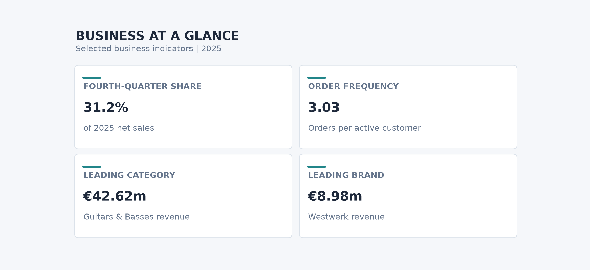
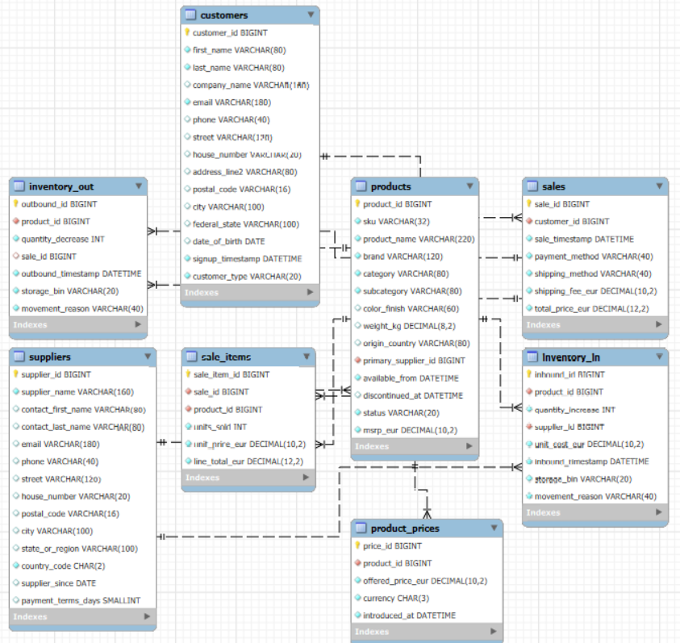
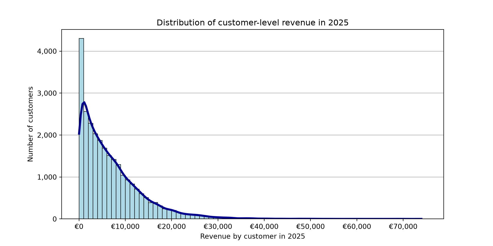
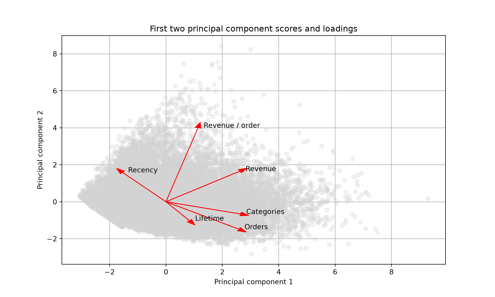
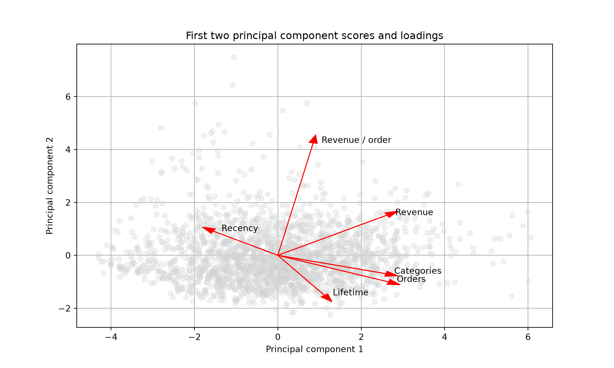
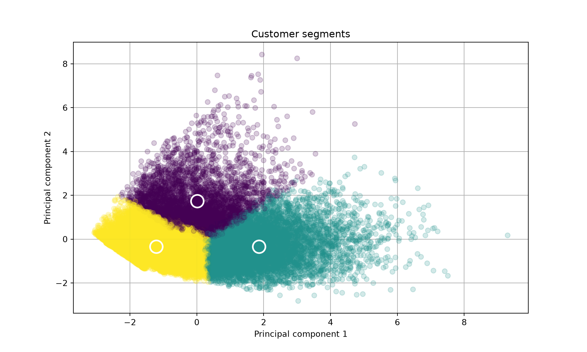
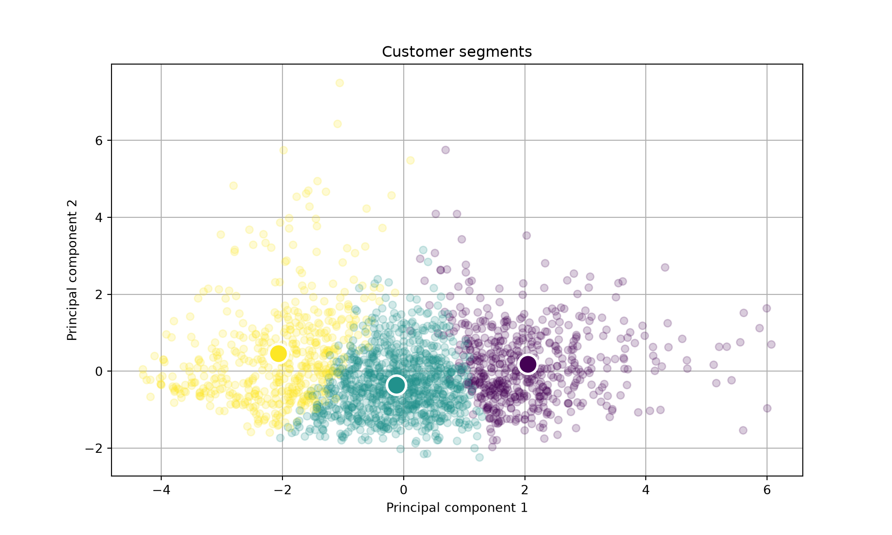
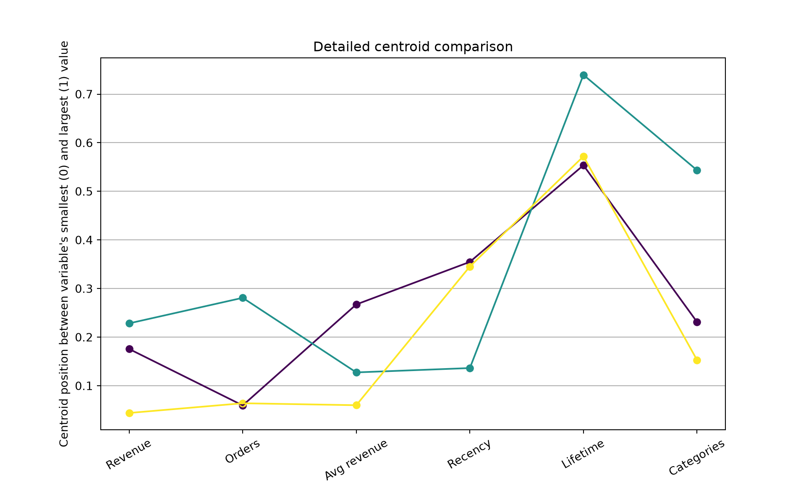
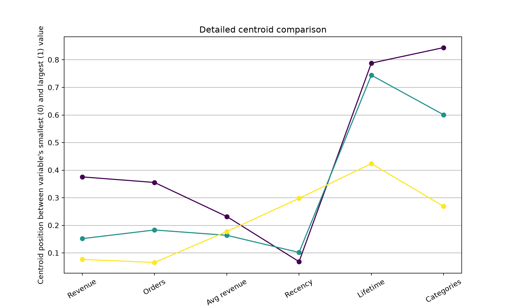
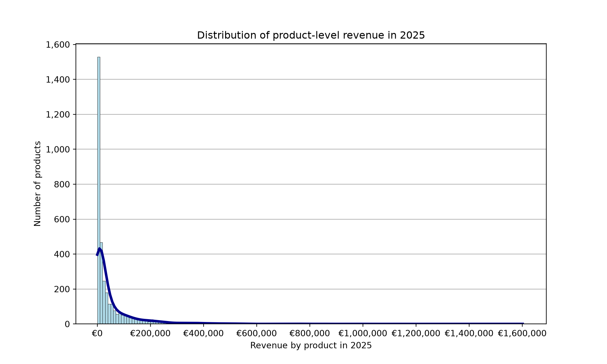

Note:
To access the source files of this project, please visit https://github.com/dschulz13/musical_retail_sql_project.
1 Executive summary
Sales are growing, with a clear fourth-quarter peak. Net sales after subtracting shipping fees increased in 2025 compared with 2024, and every month recorded year-over-year growth. October through December contributed approximately 31.2% of 2025 net sales, while growth slowed in January and February. The company should prepare inventory, fulfilment capacity, and marketing campaigns ahead of the fourth-quarter peak. For January and February, use targeted promotions and timely replenishment to support demand without relying on blanket discounts.
Increasing repeat purchases is an important growth opportunity. Total order counts rose each year, but average orders per active customer fell from 4.36 in 2022 to 3.03 in 2025. Despite increases in average order value in 2024 and 2025, approximate gross order value per active customer declined from about €7,344 in 2024 to €6,878 in 2025, using the rounded averages reported in the analysis. The company should encourage second purchases through relevant accessory recommendations, post-purchase communication, and personalized reactivation offers. Since 61.83% of observed repeat-order intervals were within 99 days and 83.18% within 199 days, these periods provide sensible starting points for customer reminders; timing should reflect each customer’s purchase history rather than a single fixed schedule.
Tailor customer management to private buyers and business accounts. The customer revenue distribution is concentrated at the lower end: 49.39% of active customers generated less than €5,000 in 2025, while approximately 75.72% generated less than €10,000. The distribution extends to €75,000, with no customer revenue above that level represented. The 20 highest-revenue customers were all classified as business customers, and most placed multiple orders across several product categories. The company should offer business customers more proactive account support, replenishment planning, and relevant cross-category offers, while using accessible bundles and complementary-product recommendations to encourage private customers to return. Prioritize outreach using purchasing recency, frequency, and category interests, and assess the value of customer groups using both revenue and profitability.
Protect leading product lines and make selective decisions about weaker sellers. Guitars & Basses was the leading category in 2025 at €42.62 million in line-item revenue. Westwerk led brands at €8.98 million, followed by Silverline at €7.95 million; Silverline Acoustic Guitar Advanced 945 Navy ranked first among individual products by revenue across 2022–2025. The company should maintain availability and visible merchandising for proven leaders and consider expanding support for products that grew in both units and revenue in every quarter. Products selling no more than five units and generating no more than €500 should be reviewed for margin, stock availability, time on sale, and marketing exposure before any delisting decision. New and discontinued products should be assessed in the context of how long they were actually available for sale.
Make pricing decisions product by product and prioritize profitable sales. The pricing analysis identifies products whose observed unit volumes remained stable or increased after price rises, as well as products that sold more units after price reductions. These patterns identify candidates for review but do not prove that price changes caused the volume movements; promotions, seasonality, and product availability may also explain them. Avoid broad price changes based on these patterns alone. Instead, selectively pilot adjustments on suitable products and judge them by contribution margin alongside units sold and revenue, taking care not to increase volume at the expense of profitability.
Manage performance through a focused business scorecard. Leadership should regularly review net sales after shipping fees, order volume, average order value, repeat-purchase frequency, active and returning customers, and product-level units, revenue, and contribution margin together. This will help distinguish growth driven by more orders from growth driven by higher spending, identify retention problems early, and direct inventory and promotional spending toward products and customer groups that create sustainable value. The immediate priorities are to prepare for fourth-quarter demand, improve repeat purchasing, strengthen relationships with business customers, and protect profitable sales of leading products.
2 Company & data information
The company is an online retailer of musical equipment and related items. The dataset covers the company’s sales from 2022 through 2025, along with information on registered customers, sale items, products, inventory movements, and related entities.
Note: The data used is the synthetic SQL database musical_retail_germany.sql provided in my GitHub repository dschulz13/musical_retail_germany.
The available data is structured as displayed in Figure 2.1.

The database contains eight interconnected tables: sales, sale_items, products, product_prices, customers, suppliers, inventory_in, and inventory_out.
3 Objectives
The data supports, among others, four broad business topics, each with several sub-questions. They help determining the current state of the company at the end of the year 2025. This project aims to address the presented questions as the analysis is developed.
- Revenue & sales performance
- How much was sold in 2025?
- How did 2025 compare with 2024?
- Is revenue growing?
- How many customers are registered, and how many orders are placed?
- What is the average order value?
- What accounts for the increase or decrease in revenue?
- Customer health
- How many active customers are there in 2025?
- How many of them are new and how many are returning?
- How concentrated is revenue among customers?
- What does customer purchasing frequency look like?
- Are there high-value customer segments?
- Are customers becoming more or less valuable?
- Product portfolio
- Which categories/brands/products drive revenue?
- Which products are growing?
- Which products have poor sales?
- How concentrated is revenue among products?
- Which products are newly introduced?
- Which products have been discontinued?
- Pricing
- Which products experienced major price changes?
- Which products increased in price without losing much volume?
- Which products became cheaper but sold considerably more?
- Which brands/categories have the highest prices?
4 Applied tools
Data manipulation, calculations and table creations are performed in MySQL. Graphics and unsupervised learning techniques, used only sparingly where clearly helpful in this MySQL project, are created with Python, while R Markdown is used to generate the report and format the final table outputs.
AI tools were used to enhance the written text. No AI was used in the application of MySQL, Python and R Markdown.
5 Detailed project results
This section presents the results available so far, with tables, figures, and corresponding recommendations. Results are organized by topic and business question. Before running the provided SQL, one should run SQL Cleaning Script.sql to create views of cleaned tables from the musical_retail_germany database.
5.1 Revenue & sales performance
5.1.1 How much was sold in 2025?
SQL approach for total 2025 figure
- Filter
salesto transactions recorded in 2025. - Sum
total_price_eur - shipping_fee_eurto calculate sales after subtracting shipping fees.
Show code
# Total sales in year 2025
SELECT SUM(total_price_eur - shipping_fee_eur) AS total_sales_2025
FROM SALES
WHERE EXTRACT(YEAR FROM sale_timestamp) = 2025;SQL approach for absolute figures in Table 5.1
- Filter sales to 2025 and extract the month from each sale timestamp.
- Group by month and sum sales after subtracting shipping fees.
- Pivot the 12 monthly totals into one row with conditional aggregation (
MAX(CASE WHEN ...)).
Show code
# Total sales by month in year 2025 (Table 5.1, Row 1)
WITH sales_long_tab AS (
SELECT EXTRACT(MONTH FROM sale_timestamp) AS month_numb, SUM(total_price_eur - shipping_fee_eur) AS total_sales
FROM sales
WHERE EXTRACT(YEAR FROM sale_timestamp) = 2025
GROUP BY EXTRACT(MONTH FROM sale_timestamp))
SELECT
MAX(CASE WHEN month_numb = 1 THEN total_sales END) AS January,
MAX(CASE WHEN month_numb = 2 THEN total_sales END) AS February,
MAX(CASE WHEN month_numb = 3 THEN total_sales END) AS March,
MAX(CASE WHEN month_numb = 4 THEN total_sales END) AS April,
MAX(CASE WHEN month_numb = 5 THEN total_sales END) AS May,
MAX(CASE WHEN month_numb = 6 THEN total_sales END) AS June,
MAX(CASE WHEN month_numb = 7 THEN total_sales END) AS July,
MAX(CASE WHEN month_numb = 8 THEN total_sales END) AS August,
MAX(CASE WHEN month_numb = 9 THEN total_sales END) AS September,
MAX(CASE WHEN month_numb = 10 THEN total_sales END) AS October,
MAX(CASE WHEN month_numb = 11 THEN total_sales END) AS November,
MAX(CASE WHEN month_numb = 12 THEN total_sales END) AS December
FROM sales_long_tab;SQL approach for relative figures in Table 5.1
- Filter sales to 2025, extract the month, and calculate each month’s total after subtracting shipping fees.
- Use the sum of all monthly totals as the annual denominator.
- Calculate each month’s share of annual sales and format it as a percentage.
- Pivot the monthly percentages into one row for presentation.
Show code
# Total sales by month in year 2025 (Table 5.1, Row 2)
WITH sales_long_tab AS (
SELECT EXTRACT(MONTH FROM sale_timestamp) AS month_numb, SUM(total_price_eur - shipping_fee_eur) AS total_sales
FROM sales
WHERE EXTRACT(YEAR FROM sale_timestamp) = 2025
GROUP BY EXTRACT(MONTH FROM sale_timestamp))
SELECT
CONCAT(ROUND(100 * MAX(CASE WHEN month_numb = 1 THEN total_sales END) / SUM(total_sales), 2), '%') AS January,
CONCAT(ROUND(100 * MAX(CASE WHEN month_numb = 2 THEN total_sales END) / SUM(total_sales), 2), '%') AS February,
CONCAT(ROUND(100 * MAX(CASE WHEN month_numb = 3 THEN total_sales END) / SUM(total_sales), 2), '%') AS March,
CONCAT(ROUND(100 * MAX(CASE WHEN month_numb = 4 THEN total_sales END) / SUM(total_sales), 2), '%') AS April,
CONCAT(ROUND(100 * MAX(CASE WHEN month_numb = 5 THEN total_sales END) / SUM(total_sales), 2), '%') AS May,
CONCAT(ROUND(100 * MAX(CASE WHEN month_numb = 6 THEN total_sales END) / SUM(total_sales), 2), '%') AS June,
CONCAT(ROUND(100 * MAX(CASE WHEN month_numb = 7 THEN total_sales END) / SUM(total_sales), 2), '%') AS July,
CONCAT(ROUND(100 * MAX(CASE WHEN month_numb = 8 THEN total_sales END) / SUM(total_sales), 2), '%') AS August,
CONCAT(ROUND(100 * MAX(CASE WHEN month_numb = 9 THEN total_sales END) / SUM(total_sales), 2), '%') AS September,
CONCAT(ROUND(100 * MAX(CASE WHEN month_numb = 10 THEN total_sales END) / SUM(total_sales), 2), '%') AS October,
CONCAT(ROUND(100 * MAX(CASE WHEN month_numb = 11 THEN total_sales END) / SUM(total_sales), 2), '%') AS November,
CONCAT(ROUND(100 * MAX(CASE WHEN month_numb = 12 THEN total_sales END) / SUM(total_sales), 2), '%') AS December
FROM sales_long_tab;Results
The net sales total for 2025, defined here as total_price_eur minus shipping fees, is €181,162,213.59.
Table 5.1 shows monthly net sales for 2025. October, November, and December recorded €15,862,459.29, €20,654,304.18, and €19,996,241.47, respectively. Together, these three months contributed approximately 31.2% of annual net sales, indicating a pronounced fourth-quarter peak. The company should prepare inventory, fulfilment capacity, and campaign activity ahead of this period, then use monthly demand to adjust replenishment and avoid tying up unnecessary stock outside peak periods.
| January | February | March | April | May | June | July | August | September | October | November | December | |
|---|---|---|---|---|---|---|---|---|---|---|---|---|
| Absolute | €11,634,671.43 | €13,224,547.24 | €14,406,142.15 | €14,108,479.68 | €14,687,588.63 | €13,669,492.17 | €13,437,017.96 | €14,455,434.75 | €15,025,834.64 | €15,862,459.29 | €20,654,304.18 | €19,996,241.47 |
| Relative | 6.42% | 7.30% | 7.95% | 7.79% | 8.11% | 7.55% | 7.42% | 7.98% | 8.29% | 8.76% | 11.40% | 11.04% |
5.1.2 How did 2025 compare with 2024?
SQL approach for total 2024 figure
- Filter
salesto transactions recorded in 2024. - Sum
total_price_eur - shipping_fee_eurto calculate the comparable net-of-shipping sales total for 2024.
Show code
# Total sales in year 2024
SELECT SUM(total_price_eur - shipping_fee_eur) AS total_sales_2024
FROM SALES
WHERE EXTRACT(YEAR FROM sale_timestamp) = 2024;SQL approach for Table 5.2
- Filter transactions to 2024 and 2025, then aggregate net-of-shipping sales by year and month.
- Use
LAG()partitioned by month to align each 2025 month with the corresponding 2024 value. - Keep the 2025 rows and calculate absolute and relative year-over-year changes.
- Format the monetary values and percentage changes for the comparison table.
Show code
# Monthly sales comparison between 2024 and 2025 (Table 5.2)
WITH suma_tab AS (
SELECT EXTRACT(YEAR FROM sale_timestamp) AS year_numb, EXTRACT(MONTH FROM sale_timestamp) AS month_numb, MONTHNAME(sale_timestamp) AS month_name, SUM(total_price_eur - shipping_fee_eur) AS total_sales
FROM sales
WHERE EXTRACT(YEAR FROM sale_timestamp) BETWEEN 2024 AND 2025
GROUP BY EXTRACT(YEAR FROM sale_timestamp), EXTRACT(MONTH FROM sale_timestamp), MONTHNAME(sale_timestamp)),
lag_tab AS (
SELECT year_numb, month_numb, month_name, LAG(total_sales, 1) OVER (PARTITION BY month_numb ORDER BY year_numb ASC) AS total_sales_2024, total_sales AS total_sales_2025
FROM suma_tab),
comp_tab AS (
SELECT month_name, total_sales_2024, total_sales_2025 FROM lag_tab
WHERE year_numb = 2025
ORDER BY month_numb ASC)
SELECT month_name, CONCAT('€', FORMAT(total_sales_2024, 2)) AS total_sales_2024,
CONCAT('€', FORMAT(total_sales_2025, 2)) AS total_sales_2025,
CASE
WHEN total_sales_2025 - total_sales_2024 >= 0 THEN CONCAT('+€', FORMAT(total_sales_2025 - total_sales_2024, 2))
WHEN total_sales_2025 - total_sales_2024 < 0 THEN CONCAT('-€', FORMAT(ABS(total_sales_2025 - total_sales_2024), 2))
END AS abs_change,
CASE
WHEN 100 * (total_sales_2025 - total_sales_2024) / total_sales_2024 >= 0 THEN CONCAT('+', FORMAT(100 * (total_sales_2025 - total_sales_2024) / total_sales_2024, 2), '%')
WHEN 100 * (total_sales_2025 - total_sales_2024) / total_sales_2024 < 0 THEN CONCAT('-', FORMAT(ABS(100 * (total_sales_2025 - total_sales_2024) / total_sales_2024), 2), '%')
END AS rel_change
FROM comp_tab;Results
Net sales totaled €181,162,213.59 in 2025, an increase of €20,310,547.77 (12.63%) compared with 2024, when net sales were €160,851,665.82.
| Month | Sales 2024 | Sales 2025 | Absolute change | Relative change |
|---|---|---|---|---|
| January | €10,662,098.53 | €11,634,671.43 | +€972,572.90 | +9.12% |
| February | €12,509,612.61 | €13,224,547.24 | +€714,934.63 | +5.72% |
| March | €12,716,601.72 | €14,406,142.15 | +€1,689,540.43 | +13.29% |
| April | €12,951,284.01 | €14,108,479.68 | +€1,157,195.67 | +8.93% |
| May | €13,269,831.06 | €14,687,588.63 | +€1,417,757.57 | +10.68% |
| June | €12,281,043.47 | €13,669,492.17 | +€1,388,448.70 | +11.31% |
| July | €11,909,782.25 | €13,437,017.96 | +€1,527,235.71 | +12.82% |
| August | €12,686,576.47 | €14,455,434.75 | +€1,768,858.28 | +13.94% |
| September | €13,107,929.40 | €15,025,834.64 | +€1,917,905.24 | +14.63% |
| October | €13,674,035.81 | €15,862,459.29 | +€2,188,423.48 | +16.00% |
| November | €17,877,541.31 | €20,654,304.18 | +€2,776,762.87 | +15.53% |
| December | €17,205,329.18 | €19,996,241.47 | +€2,790,912.29 | +16.22% |
As Table 5.2 shows, net sales increased in every month of 2025 compared with the same month in 2024. February had the smallest relative increase (5.72%), followed by April (8.93%) and January (9.12%). The largest relative increases occurred in October, November, and December. Management should protect the activities and product availability supporting this broad-based growth, use targeted campaigns to address weaker-growth months rather than blanket discounts, and scale stock and fulfilment plans before the stronger fourth-quarter period.
5.1.3 Is revenue growing?
SQL approach for Table 5.3
- Aggregate
total_price_eurby year and month; this query does not subtract shipping fees. - Use windowed
LAG()values to retrieve the same month’s revenue from the previous three years. - For the 2025 row, calculate relative changes for 2022–2023, 2023–2024, and 2024–2025.
- Return the monthly comparison in calendar order.
Show code
# Total revenue increase in % by month for each year (Table 5.3)
WITH agg_tab AS (
SELECT EXTRACT(YEAR FROM sale_timestamp) AS year_numb, EXTRACT(MONTH FROM sale_timestamp) AS month_numb, MONTHNAME(sale_timestamp) AS month_name, SUM(total_price_eur) AS revenue
FROM sales
GROUP BY EXTRACT(YEAR FROM sale_timestamp), EXTRACT(MONTH FROM sale_timestamp), MONTHNAME(sale_timestamp)),
lag_tab AS (
SELECT year_numb, month_numb, month_name, LAG(revenue, 3) OVER (PARTITION BY month_numb ORDER BY year_numb ASC) AS rev_2022,
LAG(revenue, 2) OVER (PARTITION BY month_numb ORDER BY year_numb ASC) AS rev_2023,
LAG(revenue, 1) OVER (PARTITION BY month_numb ORDER BY year_numb ASC) AS rev_2024,
revenue AS rev_2025
FROM agg_tab)
SELECT month_name,
CASE
WHEN 100 * (rev_2023 - rev_2022) / rev_2022 >= 0 THEN CONCAT('+', FORMAT(100 * (rev_2023 - rev_2022) / rev_2022, 2), '%')
WHEN 100 * (rev_2023 - rev_2022) / rev_2022 < 0 THEN CONCAT('-', FORMAT(ABS(100 * (rev_2023 - rev_2022) / rev_2022), 2), '%')
END AS change_22_23,
CASE
WHEN 100 * (rev_2024 - rev_2023) / rev_2023 >= 0 THEN CONCAT('+', FORMAT(100 * (rev_2024 - rev_2023) / rev_2023, 2), '%')
WHEN 100 * (rev_2024 - rev_2023) / rev_2023 < 0 THEN CONCAT('-', FORMAT(ABS(100 * (rev_2024 - rev_2023) / rev_2023), 2), '%')
END AS change_23_24,
CASE
WHEN 100 * (rev_2025 - rev_2024) / rev_2024 >= 0 THEN CONCAT('+', FORMAT(100 * (rev_2025 - rev_2024) / rev_2024, 2), '%')
WHEN 100 * (rev_2025 - rev_2024) / rev_2024 < 0 THEN CONCAT('-', FORMAT(ABS(100 * (rev_2025 - rev_2024) / rev_2024), 2), '%')
END AS change_24_25
FROM lag_tab
WHERE year_numb = 2025
ORDER BY month_numb;Results
| Month | Change 2022 to 2023 | Change 2023 to 2024 | Change 2024 to 2025 |
|---|---|---|---|
| January | +5.40% | +9.52% | +9.11% |
| February | +9.71% | +10.35% | +5.72% |
| March | +11.48% | +5.01% | +13.27% |
| April | +6.70% | +7.06% | +8.93% |
| May | +6.31% | +8.90% | +10.67% |
| June | +6.63% | +9.29% | +11.30% |
| July | +6.42% | +10.13% | +12.81% |
| August | +7.20% | +11.48% | +13.94% |
| September | +7.87% | +7.08% | +14.62% |
| October | +8.60% | +10.25% | +15.99% |
| November | +9.28% | +9.11% | +15.52% |
| December | +6.53% | +9.42% | +16.21% |
Table 5.3 shows positive year-over-year growth for every month in each comparison presented. The growth rate accelerated from 2024 to 2025 in March through December, but slowed in January and February. This is a change in the growth rate, not a decline in revenue in those two months.
The largest acceleration was in March, when the growth rate rose from 5.01% to 13.27%—an increase of 8.26 percentage points. From September through December, the growth rate increased by roughly five to seven percentage points. The company should investigate softer growth in January and February and plan capacity for the stronger March-to-year-end trajectory. Because this query sums total_price_eur without subtracting shipping fees, these figures are not on the same net-of-shipping basis as the sales totals in Sections 6.1.1–6.1.2; management should compare like-for-like measures when evaluating performance.
5.1.4 How many registered and active customers are there?
SQL approach for Table 5.4
- Assign each customer to a registration-year bucket: 2022 or earlier, 2023, 2024, or 2025.
- Count registrations within each bucket.
- Calculate a cumulative sum across the buckets to obtain the registered-customer total at each year-end.
- Pivot the cumulative totals into one row, with one column per year.
Show code
# Cumulative registered customers by year (Table 5.4)
WITH year_tab AS (
SELECT customer_id,
CASE
WHEN EXTRACT(YEAR FROM signup_timestamp) <= 2022 THEN 2022
WHEN EXTRACT(YEAR FROM signup_timestamp) = 2023 THEN 2023
WHEN EXTRACT(YEAR FROM signup_timestamp) = 2024 THEN 2024
WHEN EXTRACT(YEAR FROM signup_timestamp) = 2025 THEN 2025
END AS registered_by
FROM customers_cleaned),
agg_tab AS (
SELECT registered_by, COUNT(DISTINCT customer_id) AS new_registrations
FROM year_tab
GROUP BY registered_by),
sum_tab AS (
SELECT registered_by AS year, SUM(new_registrations) OVER (ORDER BY registered_by ASC) AS cum_registrations
FROM agg_tab)
SELECT
FORMAT(MAX(CASE WHEN year = 2022 THEN cum_registrations END), 0) AS year_2022,
FORMAT(MAX(CASE WHEN year = 2023 THEN cum_registrations END), 0) AS year_2023,
FORMAT(MAX(CASE WHEN year = 2024 THEN cum_registrations END), 0) AS year_2024,
FORMAT(MAX(CASE WHEN year = 2025 THEN cum_registrations END), 0) AS year_2025
FROM sum_tab;SQL approach for Table 5.5
- Extract the sale year and customer ID from each sale.
- Count distinct customers with at least one sale in each year.
- Pivot those yearly counts into one row for 2022–2025.
Show code
# Active customers by year (Table 5.5)
WITH id_tab AS (
SELECT EXTRACT(YEAR FROM sale_timestamp) AS year_numb, customer_id FROM sales),
agg_tab AS (
SELECT year_numb, COUNT(DISTINCT customer_id) AS numb_active_cust
FROM id_tab
GROUP BY year_numb)
SELECT
FORMAT(MAX(CASE WHEN year_numb = 2022 THEN numb_active_cust END), 0) AS year_2022,
FORMAT(MAX(CASE WHEN year_numb = 2023 THEN numb_active_cust END), 0) AS year_2023,
FORMAT(MAX(CASE WHEN year_numb = 2024 THEN numb_active_cust END), 0) AS year_2024,
FORMAT(MAX(CASE WHEN year_numb = 2025 THEN numb_active_cust END), 0) AS year_2025
FROM agg_tab;Results
| 2022 | 2023 | 2024 | 2025 |
|---|---|---|---|
| 16,000 | 20,500 | 25,000 | 30,000 |
Table 5.4 shows that the registered-customer base nearly doubled from 2022 to 2025. By the end of 2025, the platform had 30,000 registered customers. This expanding base gives the company a larger pool to convert into buyers, but registrations alone do not generate sales; make the first-purchase journey straightforward and communicate relevant product benefits to registered people who have not yet ordered.
| 2022 | 2023 | 2024 | 2025 |
|---|---|---|---|
| 14,463 | 18,157 | 21,908 | 26,408 |
Table 5.5 shows the number of active customers, defined as customers who placed at least one order in the corresponding year. Active customers are fewer than registered customers in every year. The active-customer share of the registered base ranged from 87.63% to 90.39%, and was 88.03% in 2025. The gap between registrations and active buyers makes reactivation and first-purchase conversion important alongside acquisition. The company should track active-customer share over time and use appropriate onboarding or win-back communication to turn more of its registered base into purchasing customers.
5.1.5 What is the average order value?
SQL approach for Table 5.6
- Group sales by calendar year and calculate the average
total_price_eurper order. - Pivot the four annual averages into one row and format them as euro amounts.
Show code
# Average order value by year (Table 5.6)
WITH agg_tab AS (
SELECT EXTRACT(YEAR FROM sale_timestamp) AS year_numb, AVG(total_price_eur) AS average_order_eur
FROM sales
GROUP BY EXTRACT(YEAR FROM sale_timestamp))
SELECT
CONCAT('€', FORMAT(MAX(CASE WHEN year_numb = 2022 THEN average_order_eur END), 2)) AS year_2022,
CONCAT('€', FORMAT(MAX(CASE WHEN year_numb = 2023 THEN average_order_eur END), 2)) AS year_2023,
CONCAT('€', FORMAT(MAX(CASE WHEN year_numb = 2024 THEN average_order_eur END), 2)) AS year_2024,
CONCAT('€', FORMAT(MAX(CASE WHEN year_numb = 2025 THEN average_order_eur END), 2)) AS year_2025
FROM agg_tab;Results
| 2022 | 2023 | 2024 | 2025 |
|---|---|---|---|
| €2,179.57 | €2,175.15 | €2,192.33 | €2,268.35 |
According to Table 5.6, average order value fell slightly from 2022 to 2023 and then increased in both 2024 and 2025. The 2025 average was €2,268.35. The rise creates an opportunity to promote relevant accessories, bundles, and complementary products, provided these offers protect contribution margin. This calculation uses total_price_eur; unlike the net sales totals earlier in this section, it does not subtract shipping fees, so the company should use consistent definitions when comparing campaigns or periods.
5.1.6 What accounts for the increase or decrease in revenue?
SQL approach for Table 5.7
- Count the number of sales records (orders) in each year.
- Separately count distinct active customers per year and join those counts to the annual order counts.
- Divide orders by active customers to calculate average orders per active customer.
- Combine the order-count and order-frequency rows, then pivot the annual values into columns.
Show code
# Yearly order counts and average orders by active customer (Table 5.7)
(WITH agg_tab AS (
SELECT EXTRACT(YEAR FROM sale_timestamp) AS sale_year, COUNT(*) AS orders_placed
FROM sales
GROUP BY EXTRACT(YEAR FROM sale_timestamp))
SELECT
FORMAT(MAX(CASE WHEN sale_year = 2022 THEN orders_placed END), 0) AS year_2022,
FORMAT(MAX(CASE WHEN sale_year = 2023 THEN orders_placed END), 0) AS year_2023,
FORMAT(MAX(CASE WHEN sale_year = 2024 THEN orders_placed END), 0) AS year_2024,
FORMAT(MAX(CASE WHEN sale_year = 2025 THEN orders_placed END), 0) AS year_2025
FROM agg_tab)
UNION ALL
(WITH agg_tab2 AS (
SELECT tab1.year_numb AS year_numb, ROUND(tab2.orders_placed / tab1.active_cust_count, 2) AS orders_per_capita
FROM (
SELECT EXTRACT(YEAR FROM sale_timestamp) AS year_numb, COUNT(DISTINCT customer_id) AS active_cust_count
FROM sales
GROUP BY EXTRACT(YEAR FROM sale_timestamp)) AS tab1
INNER JOIN (
SELECT EXTRACT(YEAR FROM sale_timestamp) AS sale_year, COUNT(*) AS orders_placed
FROM sales
GROUP BY EXTRACT(YEAR FROM sale_timestamp)) AS tab2 ON tab1.year_numb = tab2.sale_year)
SELECT
MAX(CASE WHEN year_numb = 2022 THEN orders_per_capita END) AS year_2022,
MAX(CASE WHEN year_numb = 2023 THEN orders_per_capita END) AS year_2023,
MAX(CASE WHEN year_numb = 2024 THEN orders_per_capita END) AS year_2024,
MAX(CASE WHEN year_numb = 2025 THEN orders_per_capita END) AS year_2025
FROM agg_tab2);SQL approach for Table 5.8
- Select 2025 sales and join them to customer records, grouping customers by whether they registered before 2025 or during 2025.
- For each registration group, calculate order count, total
total_price_eur, and average order value. - Separately count distinct active customers in each registration group.
- Join the summaries and calculate orders per active customer; format the monetary and count fields for the table.
Show code
# Order count, average orders by active customer, total revenue,
# and average order value by active customer for customers registered
# before and in 2025 (Table 5.8)
WITH joined_tab AS (
SELECT tab1.signup_year, tab2.numb_act_cust, tab1.order_count, tab1.revenue, tab1.eur_per_order FROM (
WITH comb_tab AS (
SELECT sa.sale_id, sa.customer_id,
CASE
WHEN EXTRACT(YEAR FROM c.signup_timestamp) <= 2024 THEN 'before 2025'
WHEN EXTRACT(YEAR FROM c.signup_timestamp) = 2025 THEN 'in 2025'
END AS signup_year,
sa.total_price_eur
FROM sales AS sa
INNER JOIN customers AS c ON sa.customer_id = c.customer_id
WHERE EXTRACT(YEAR FROM sa.sale_timestamp) = 2025)
SELECT signup_year, COUNT(*) AS order_count, SUM(total_price_eur) AS revenue, SUM(total_price_eur) / COUNT(*) AS eur_per_order
FROM comb_tab
GROUP BY signup_year) AS tab1
INNER JOIN (
WITH c2tab AS (
SELECT sa.customer_id,
CASE
WHEN EXTRACT(YEAR FROM c.signup_timestamp) <= 2024 THEN 'before 2025'
WHEN EXTRACT(YEAR FROM c.signup_timestamp) = 2025 THEN 'in 2025'
END AS signup_year
FROM sales AS sa
INNER JOIN customers AS c ON sa.customer_id = c.customer_id
WHERE EXTRACT(YEAR FROM sa.sale_timestamp) = 2025)
SELECT signup_year, COUNT(DISTINCT customer_id) AS numb_act_cust
FROM c2tab
GROUP BY signup_year) AS tab2 ON tab1.signup_year = tab2.signup_year)
SELECT signup_year, FORMAT(order_count, 0) AS order_count, ROUND(order_count / numb_act_cust, 2) AS orders_per_capita,
CONCAT('€', FORMAT(revenue, 2)) AS revenue, CONCAT('€', FORMAT(eur_per_order, 2)) AS value_per_order
FROM joined_tab;Results
| 2022 | 2023 | 2024 | 2025 | |
|---|---|---|---|---|
| Number of orders | 63,000 | 68,000 | 73,500 | 80,000 |
| Orders per capita | 4.36 | 3.75 | 3.35 | 3.03 |
| Signup year | Order count | Orders per capita | Revenue | Average order value |
|---|---|---|---|---|
| before 2025 | 72,301 | 3.23 | €164,052,186.74 | €2,269.02 |
| in 2025 | 7,699 | 1.92 | €17,415,849.65 | €2,262.09 |
Table 5.7 shows that the number of orders increased each year, while the average number of orders per active customer declined from 4.36 in 2022 to 3.03 in 2025. Multiplying order frequency by average order value gives an approximate annual order value per active customer of €6,873.10 in 2025, down from €7,344.31 in 2024. The active-customer share of the registered base was broadly stable. These figures suggest that growth is associated with a larger customer base and more orders overall, but they do not by themselves establish how much of the increase was caused by new registrations.
Using the rounded order counts and average order values, the estimated increase in gross order value from 2024 to 2025 is €20,331,745.00. If average order value had remained at its 2024 level, the increase in order count would account for €14,250,145.00 of the increase. If order count had remained at its 2024 level, the higher average order value would account for €5,587,470.00. The remaining €494,130.00 is the interaction between the two changes. On this decomposition, higher order volume is the largest arithmetic contributor. Note that this calculation uses total_price_eur and rounded averages, whereas the headline sales totals subtract shipping fees; the resulting amounts are therefore not directly comparable and may not reconcile exactly.
Table 5.8 shows that customers registered before 2025 generated €164,052,186.74 in gross order value during 2025, compared with €17,415,849.65 from customers who registered during 2025. These figures are useful for describing the 2025 cohorts, but they should not be directly compared with the 2024 net sales total because the definitions differ. The newer registration cohort recorded fewer orders per active customer, which may partly reflect its shorter time on the platform.
Customer acquisition is valuable, but sustained growth also depends on retention. The company should test ways to reactivate lapsed customers and increase repeat purchases among active customers. Options include targeted discounts for lapsed or long-standing customers and a loyalty programme that rewards repeat orders. A controlled pilot with a holdout group would help determine whether these interventions create incremental orders and margin, rather than simply discounting purchases that would have happened anyway.
5.2 Customer health
5.2.1 How many active customers are there in 2025?
Sub-question: How many of them are new and how many are returning?
SQL approach for Table 5.9
- Number each customer’s purchases chronologically across the full sales history.
- Keep the customer’s 2025 purchases and classify the customer as new if their first-ever purchase is in 2025, otherwise as returning.
- Count customers in each group and calculate each group’s percentage of all active customers in 2025.
- Return absolute counts and relative shares as two rows.
Show code
# Number of new and returning customers in 2025 (Table 5.9)
WITH agg_tab AS (
SELECT customer_id, ROW_NUMBER() OVER (PARTITION BY customer_id ORDER BY sale_timestamp ASC) AS nr_purchase, EXTRACT(YEAR FROM sale_timestamp) AS sale_year
FROM sales),
type_tab AS (
SELECT customer_id,
CASE
WHEN MIN(nr_purchase) = 1 THEN 'new'
ELSE 'returning'
END AS customer_type
FROM agg_tab
WHERE sale_year = 2025
GROUP BY customer_id),
count_tab AS (
SELECT customer_type, COUNT(*) AS customer_count
FROM type_tab
GROUP BY customer_type),
abs_tab AS (
SELECT
MAX(CASE WHEN customer_type = 'returning' THEN customer_count END) AS returning_cust,
MAX(CASE WHEN customer_type = 'new' THEN customer_count END) AS new_cust
FROM count_tab)
(SELECT
FORMAT(returning_cust, 0) AS 'Returning',
FORMAT(new_cust, 0) AS 'New',
FORMAT(returning_cust + new_cust, 0) AS 'Total'
FROM abs_tab)
UNION ALL
(SELECT
CONCAT(ROUND(100 * returning_cust / (returning_cust + new_cust), 2), '%') AS 'Returning',
CONCAT(ROUND(100 * new_cust / (returning_cust + new_cust), 2), '%') AS 'New',
'100.00%' AS 'Total'
FROM abs_tab);Results
| Returning | New | Total | |
|---|---|---|---|
| Absolute | 20,789 | 5,619 | 26,408 |
| Relative | 78.72% | 21.28% | 100.00% |
Table 5.9 shows 26,408 active customers in 2025, defined as customers who placed at least one order during the year. A new customer is one whose first-ever purchase occurred in 2025, regardless of registration date. On this basis, 5,619 customers (21.28%) were new buyers and 20,789 (78.72%) were returning buyers. The split should guide distinct commercial priorities: help new buyers reach a useful second purchase, and encourage returning customers to replenish or explore complementary products. Because registration and first purchase are different events, acquisition performance should be judged by actual first orders as well as the repeat orders that follow.
5.2.2 How concentrated is revenue among customers?
SQL approach for Table 5.10
- Construct revenue intervals in €5,000 steps, with an upper limit of €75,000.
- Sum each customer’s
total_price_euracross 2025 sales. - Assign each customer to the interval containing their 2025 revenue and count customers by interval.
- Calculate each interval’s share of the customers included in the grouped results and order the intervals from low to high.
Show code
# Revenue concentration among active customers in 2025 (Table 5.10)
WITH pre_tab AS (
SELECT f.thousands + g.tthousands AS lower_bound, LEAD(f.thousands + g.tthousands) OVER (ORDER BY f.thousands + g.tthousands ASC) AS upper_bound
FROM (
SELECT 0 AS thousands
UNION ALL SELECT 5000
) AS f
CROSS JOIN (
SELECT 0 AS tthousands
UNION ALL SELECT 10000
UNION ALL SELECT 20000
UNION ALL SELECT 30000
UNION ALL SELECT 40000
UNION ALL SELECT 50000
UNION ALL SELECT 60000
UNION ALL SELECT 70000
UNION ALL SELECT 80000
UNION ALL SELECT 90000
) AS g
ORDER BY f.thousands + g.tthousands ASC),
group_tab AS (
SELECT lower_bound, upper_bound - 0.01 AS upper_bound, CONCAT('[€', FORMAT(lower_bound, 0), ', €', FORMAT(upper_bound, 0), ')') AS category
FROM pre_tab
WHERE upper_bound <= 75000),
sale_tab AS (
SELECT customer_id, SUM(total_price_eur) AS revenue
FROM sales
WHERE EXTRACT(YEAR FROM sale_timestamp) = 2025
GROUP BY customer_id),
comb_tab AS (
SELECT st.customer_id, st.revenue, gt.category, gt.lower_bound AS lower_bound
FROM sale_tab AS st
INNER JOIN group_tab AS gt ON st.revenue BETWEEN gt.lower_bound AND gt.upper_bound),
pre_final AS (
SELECT category, COUNT(*) AS cust_count, lower_bound
FROM comb_tab
GROUP BY category, lower_bound)
SELECT category, FORMAT(cust_count, 0), CONCAT(FORMAT(100 * cust_count / (SUM(cust_count) OVER ()), 2), '%') AS rel
FROM pre_final
ORDER BY lower_bound;Results:
| Revenue interval | Customer count | Relative |
|---|---|---|
| [€0, €5,000) | 13,044 | 49.39% |
| [€5,000, €10,000) | 6,952 | 26.33% |
| [€10,000, €15,000) | 3,584 | 13.57% |
| [€15,000, €20,000) | 1,555 | 5.89% |
| [€20,000, €25,000) | 687 | 2.60% |
| [€25,000, €30,000) | 331 | 1.25% |
| [€30,000, €35,000) | 129 | 0.49% |
| [€35,000, €40,000) | 64 | 0.24% |
| [€40,000, €45,000) | 25 | 0.09% |
| [€45,000, €50,000) | 16 | 0.06% |
| [€50,000, €55,000) | 11 | 0.04% |
| [€55,000, €60,000) | 4 | 0.02% |
| [€60,000, €65,000) | 2 | 0.01% |
| [€65,000, €70,000) | 3 | 0.01% |
| [€70,000, €75,000) | 1 | 0.00% |
Table 5.10 shows 2025 revenue per active customer grouped into revenue intervals. These amounts use total_price_eur, so they are not directly comparable with the net-of-shipping sales totals reported earlier. The distribution is strongly right-skewed: 49.39% of active customers generated less than €5,000, approximately 75.72% generated less than €10,000, and 0.08% fell into the displayed bands from €50,000 up to €75,000. The distribution ends at €75,000, indicating that no customer revenue exceeded that level. This pattern supports scalable repeat-purchase and cross-sell activity for the broad lower-spending base alongside more personalized account management for high-value buyers.

Figure 5.1 combines a histogram of customer-level revenue in 2025 with a kernel density estimate and highlights the distribution’s strong right skew and long upper tail. Commercially, this suggests a two-track approach: make repeat-purchase and complementary-product offers economical to deliver across the broad lower-revenue base, while offering more tailored account support to high-revenue customers. Revenue should be considered alongside gross margin and servicing costs when deciding how much support or incentive each group warrants.
5.2.3 What does customer purchasing frequency look like?
SQL approach for Table 5.11
- Use
LAG()to find each customer’s previous sale timestamp and calculate the elapsed time in days. - Keep order intervals associated with sales made in 2025.
- Build 100-day intervals from 0 through 1,399 days and assign each eligible order interval to a bin.
- Count intervals in each bin and calculate their percentage of all intervals included in the bins.
Show code
# Number of orders in 2025 by days since the previous purchase (Table 5.11)
WITH time_tab AS (
SELECT customer_id, sale_timestamp, TIMESTAMPDIFF(SECOND, LAG(sale_timestamp, 1) OVER (PARTITION BY customer_id ORDER BY sale_timestamp ASC), sale_timestamp) / 86400.0 AS days_since_last_purch
FROM sales
ORDER BY customer_id, sale_timestamp),
freq_tab AS (
SELECT customer_id, days_since_last_purch
FROM time_tab
WHERE EXTRACT(YEAR FROM sale_timestamp) = 2025),
pre_group AS (
SELECT hund_tab.hundreds + thous_tab.thousands AS lower_bound,
LEAD(hund_tab.hundreds + thous_tab.thousands, 1) OVER (ORDER BY hund_tab.hundreds + thous_tab.thousands) AS upper_bound
FROM (
SELECT 0 AS hundreds
UNION ALL SELECT 100
UNION ALL SELECT 200
UNION ALL SELECT 300
UNION ALL SELECT 400
UNION ALL SELECT 500
UNION ALL SELECT 600
UNION ALL SELECT 700
UNION ALL SELECT 800
UNION ALL SELECT 900
) AS hund_tab
CROSS JOIN (
SELECT 0 AS thousands
UNION ALL SELECT 1000
) AS thous_tab
ORDER BY hund_tab.hundreds + thous_tab.thousands ASC),
group_tab AS (
SELECT lower_bound, upper_bound - 1 AS upper_bound, CONCAT('between ', lower_bound, ' and ', upper_bound - 1) AS category
FROM pre_group
WHERE upper_bound <= 1400),
count_tab AS (
SELECT gt.category, gt.lower_bound
FROM freq_tab AS ft
INNER JOIN group_tab AS gt ON ft.days_since_last_purch >= gt.lower_bound AND ft.days_since_last_purch < gt.upper_bound + 1),
pre_final AS (
SELECT category, COUNT(*) AS order_count, lower_bound
FROM count_tab
GROUP BY category, lower_bound
ORDER BY lower_bound)
SELECT category, FORMAT(order_count, 0) AS abs, CONCAT(FORMAT(100 * order_count / SUM(order_count) OVER (), 2), '%') AS rel
FROM pre_final;Results
| Days since last purchase | Order count | Relative |
|---|---|---|
| between 0 and 99 | 45,988 | 61.83% |
| between 100 and 199 | 15,884 | 21.35% |
| between 200 and 299 | 6,714 | 9.03% |
| between 300 and 399 | 3,092 | 4.16% |
| between 400 and 499 | 1,403 | 1.89% |
| between 500 and 599 | 681 | 0.92% |
| between 600 and 699 | 307 | 0.41% |
| between 700 and 799 | 155 | 0.21% |
| between 800 and 899 | 72 | 0.10% |
| between 900 and 999 | 48 | 0.06% |
| between 1000 and 1099 | 25 | 0.03% |
| between 1100 and 1199 | 9 | 0.01% |
| between 1200 and 1299 | 1 | 0.00% |
| between 1300 and 1399 | 2 | 0.00% |
Among the order intervals assigned to the reported bins, 61.83% fell within 99 days of the previous purchase and 83.18% within 199 days. 3.63% fell into bins of 400 days or more; this should not be described as the share taking more than a year, because the 300–399-day bin straddles the one-year mark. The table counts order intervals, not unique customers: the 37 observations at 1,000 days or more are orders, not customers. Overall, repeat-purchase intervals are strongly right-skewed. The company can use the first few months after a purchase as a starting window for relevant accessory recommendations or replenishment reminders, and longer-lapsed intervals for selective win-back outreach. Timing should reflect the product category and individual purchase history, and incentives should be evaluated on incremental margin rather than order count alone.
5.2.4 Are there high-value customer segments?
SQL approach for Table 5.12
- Aggregate 2025 revenue and order count separately for each customer.
- Calculate recency and time since first purchase relative to January 01, 2026 (taken as the current time point).
- Join sales to sale items and product data to count distinct categories purchased by each customer in 2025.
- Join those features to the cleaned customer type, calculate revenue shares and average revenue per order, then return the 20 highest-revenue customers.
Show code
# Key features of top 20 customers by revenue in 2025 (Table 5.12)
WITH rev_tab AS (
SELECT customer_id, SUM(total_price_eur) AS revenue
FROM sales
WHERE EXTRACT(YEAR FROM sale_timestamp) = 2025
GROUP BY customer_id
ORDER BY SUM(total_price_eur) DESC),
ord_tab AS (
SELECT customer_id, COUNT(*) AS order_count
FROM sales
WHERE EXTRACT(YEAR FROM sale_timestamp) = 2025
GROUP BY customer_id
ORDER BY COUNT(*) DESC),
recency_tab AS (
SELECT customer_id, TIMESTAMPDIFF(SECOND, MAX(sale_timestamp), '2026-01-01 00:00:00') / 86400.0 AS recency
FROM sales
WHERE EXTRACT(YEAR FROM sale_timestamp) = 2025
GROUP BY customer_id),
cust_id_2025 AS (
SELECT DISTINCT customer_id
FROM sales
WHERE EXTRACT(YEAR FROM sale_timestamp) = 2025
),
first_tab AS (
SELECT cid.customer_id, stab.time_since_first_purch
FROM cust_id_2025 AS cid
LEFT JOIN (
SELECT customer_id, TIMESTAMPDIFF(SECOND, MIN(sale_timestamp), '2026-01-01 00:00:00') / 86400.0 AS time_since_first_purch
FROM sales
GROUP BY customer_id
) AS stab ON cid.customer_id = stab.customer_id),
cat_pre AS (
SELECT s1.customer_id, s3.category
FROM sales AS s1
INNER JOIN sale_items AS s2 ON s1.sale_id = s2.sale_id
LEFT JOIN products AS s3 ON s2.product_id = s3.product_id
WHERE EXTRACT(YEAR FROM s1.sale_timestamp) = 2025),
cat_final AS (
SELECT customer_id, COUNT(DISTINCT category) AS category_count
FROM cat_pre
GROUP BY customer_id)
SELECT rt.customer_id, CONCAT('€', FORMAT(rt.revenue, 2)) AS revenue,
CONCAT(FORMAT(100 * rt.revenue / (SUM(rt.revenue) OVER ()), 2), '%') AS perc,
FORMAT(ot.order_count, 0) AS order_count, CONCAT('€', FORMAT(rt.revenue / ot.order_count, 2)) AS average_rev_per_order, cc.customer_type,
FORMAT(rec_tab.recency, 2) AS recency, FORMAT(ft.time_since_first_purch, 2) AS time_since_first_purch, ct.category_count
FROM rev_tab AS rt
INNER JOIN ord_tab AS ot ON rt.customer_id = ot.customer_id
INNER JOIN customers_cleaned AS cc ON rt.customer_id = cc.customer_id
INNER JOIN recency_tab AS rec_tab ON rt.customer_id = rec_tab.customer_id
INNER JOIN first_tab AS ft ON rt.customer_id = ft.customer_id
INNER JOIN cat_final AS ct ON rt.customer_id = ct.customer_id
ORDER BY rt.revenue DESC
LIMIT 20;Results
| Customer ID | Total revenue | Relative revenue | Order count | Average revenue per order | Customer type | Days since last purchase | Days since first purchase | Product categories |
|---|---|---|---|---|---|---|---|---|
| 13597 | €73,936.02 | 0.04% | 19 | €3,891.37 | business | 34.43 | 1,283.34 | 9 |
| 7188 | €68,869.68 | 0.04% | 22 | €3,130.44 | business | 2.54 | 1,427.33 | 8 |
| 10773 | €68,352.92 | 0.04% | 17 | €4,020.76 | business | 16.43 | 1,442.57 | 9 |
| 21762 | €68,133.97 | 0.04% | 22 | €3,097.00 | business | 4.45 | 591.21 | 9 |
| 8195 | €62,537.72 | 0.03% | 19 | €3,291.46 | business | 6.36 | 1,399.58 | 9 |
| 2490 | €60,087.47 | 0.03% | 19 | €3,162.50 | business | 25.55 | 1,430.33 | 9 |
| 6827 | €59,359.82 | 0.03% | 19 | €3,124.20 | business | 43.56 | 1,450.29 | 9 |
| 6671 | €57,768.30 | 0.03% | 16 | €3,610.52 | business | 69.53 | 1,412.60 | 8 |
| 9104 | €57,288.53 | 0.03% | 10 | €5,728.85 | business | 10.21 | 1,452.39 | 9 |
| 3633 | €55,129.13 | 0.03% | 11 | €5,011.74 | business | 37.59 | 1,432.21 | 7 |
| 1313 | €53,967.22 | 0.03% | 19 | €2,840.38 | business | 3.30 | 1,451.49 | 9 |
| 24930 | €53,718.34 | 0.03% | 19 | €2,827.28 | business | 1.41 | 347.43 | 9 |
| 6300 | €53,535.55 | 0.03% | 22 | €2,433.43 | business | 14.36 | 1,432.35 | 9 |
| 12403 | €52,805.53 | 0.03% | 17 | €3,106.21 | business | 32.46 | 1,377.31 | 8 |
| 19151 | €52,045.45 | 0.03% | 11 | €4,731.40 | business | 7.37 | 816.28 | 8 |
| 5387 | €51,136.08 | 0.03% | 27 | €1,893.93 | business | 4.45 | 1,427.28 | 9 |
| 24902 | €50,688.00 | 0.03% | 13 | €3,899.08 | business | 42.45 | 350.60 | 9 |
| 3092 | €50,628.83 | 0.03% | 21 | €2,410.90 | business | 9.22 | 1,458.44 | 9 |
| 8579 | €50,591.70 | 0.03% | 17 | €2,975.98 | business | 1.36 | 1,422.55 | 9 |
| 9543 | €50,522.10 | 0.03% | 13 | €3,886.32 | business | 6.32 | 1,433.34 | 8 |
Table 5.12 summarizes the 20 customers with the highest 2025 revenue. All are classified as business customers in the cleaned data, and most placed multiple orders across several product categories. Many have been purchasing from the company for more than 1,000 days. Each contributed approximately 0.03%–0.04% of total 2025 customer revenue, so no single customer dominates this measure. These patterns support proactive business-account management, including named contact points, replenishment planning, and relevant cross-category offers. Revenue alone does not establish profitability, however, so the level of account support and any bespoke terms should also reflect margins and service costs; business customers should still be segmented by their needs and purchasing behavior rather than treated as one uniform group.
SQL approach for the customer-segmentation input
- Aggregate 2025 gross revenue and order counts at customer level.
- Calculate days since the most recent 2025 purchase and days since the first recorded purchase, using 1 January 2026 as the reference date.
- Join sales to sale items and product metadata to count the distinct product categories purchased in 2025, and add each customer’s cleaned customer type.
- Return numeric customer-level features, along with each customer’s share of 2025 customer revenue, for use in PCA and K-Means clustering in Python.
Python code
# Import relevant libraries
import pandas as pd
from sklearn.preprocessing import StandardScaler as SC
from sklearn.cluster import KMeans
from sklearn.pipeline import Pipeline
from sklearn.decomposition import PCA
import matplotlib.pyplot as plt
import matplotlib.colors as mcolors
### K-Means wrapper for relevant results
def kmeans(data, n_clusters):
# Pipeline
kmeans_pipeline = Pipeline([
('scaler', SC(with_std = True, with_mean = True)),
('kmeans', KMeans(n_clusters = 3, random_state = 1, n_init = 100))
])
# Data to numpy
X = data.to_numpy()
# Fit
clust_fit = kmeans_pipeline.fit(X)
centroids = clust_fit.named_steps['kmeans'].cluster_centers_
labels = clust_fit.predict(X)
return {'fit_obj': clust_fit, 'centroids': centroids, 'labels': labels}
### PCA wrapper
def pca(data):
pca_pipeline = Pipeline([
('scaler', SC(with_mean = True, with_std = True)),
('pca_est', PCA())
])
pca_fit = pca_pipeline.fit(data)
scores = pca_fit.transform(data)
loadings = pca_fit.named_steps['pca_est'].components_
return {'fit_obj': pca_fit, 'scores': scores, 'loadings': loadings}
### PCA for visualization
def pca_clust_plot(clust_fit, pca_fit):
scores = pca_fit['scores']
centroids = pca_fit['fit_obj'].named_steps['pca_est'].transform(clust_fit['centroids'])
pc1 = scores[:, 0]
pc2 = scores[:, 1]
fig, ax = plt.subplots(1, 1, figsize = (10, 6))
ax.scatter(pc1, pc2, c = clust_fit['labels'], alpha = 0.2);
ax.scatter(centroids[:, 0], centroids[:, 1], c = 'red', marker = '*', s = 120);
ax.set_xlabel('Principal component 1');
ax.set_ylabel('Principal component 2');
ax.set_title('Customer segments');
ax.grid(axis = 'x');
ax.grid(axis = 'y');
ax.set_axisbelow(True);
### Biplot of PCA
def biplot(scores, loadings, s = 4):
fig, ax = plt.subplots(1, 1, figsize = (10, 6))
ax.scatter(scores[:, 0], scores[:, 1], color = '#D3D3D3', alpha = 0.3);
nams = ['Revenue', 'Orders', 'Revenue / order', 'Recency', 'Lifetime', 'Categories']
dim = loadings.shape[1]
for k in range(dim):
ax.arrow(0, 0, s * loadings[0, k], s * loadings[1, k], color = 'red', head_width = 0.2);
ax.text(s * loadings[0, k] + 0.2, s * loadings[1, k], nams[k], color = 'black');
ax.set_xlabel('Principal component 1');
ax.set_ylabel('Principal component 2');
ax.set_title('First two principal component scores and loadings');
ax.grid(axis = 'x');
ax.grid(axis = 'y');
ax.set_axisbelow(True);
### Centroid plot
def centroid_plot(clust_fit, data):
cluster_centers = clust_fit['centroids'].copy()
cluster_centers_rescaled = clust_fit['fit_obj'].named_steps['scaler'].inverse_transform(cluster_centers)
cluster_centers_sc = cluster_centers_rescaled.copy()
ncol = data.shape[1]
for i in range(0, ncol):
minv = data.iloc[:, i].min()
maxv = data.iloc[:, i].max()
cluster_centers_sc[:, i] = (cluster_centers_rescaled[:, i] - minv) / (maxv - minv)
cmap = plt.colormaps['viridis']
norm = mcolors.Normalize(vmin = 0, vmax = 2)
color_0 = cmap(norm(0))
color_1 = cmap(norm(1))
color_2 = cmap(norm(2))
x = np.arange(1, ncol + 1, 1)
fig, ax = plt.subplots(1, 1, figsize = (10, 6))
ax.plot(x, cluster_centers_sc[0, :], color = color_0);
ax.scatter(x, cluster_centers_sc[0, :], color = color_0);
ax.plot(x, cluster_centers_sc[1, :], color = color_1);
ax.scatter(x, cluster_centers_sc[1, :], color = color_1);
ax.plot(x, cluster_centers_sc[2, :], color = color_2);
ax.scatter(x, cluster_centers_sc[2, :], color = color_2);
ax.set_xticks(x, labels = ['Revenue', 'Orders', 'Avg revenue', 'Recency', 'Lifetime', 'Categories'], rotation = 30);
ax.set_ylabel("Centroid position between variable's smallest (0) and largest (1) value");
ax.set_title('Detailed centroid comparison');
ax.grid(axis = 'y');
ax.set_axisbelow(True);
### Application to private customers
data_cust = r.sql_q10_2
data_cust_private = data_cust[data_cust['customer_type'] == 'private'].copy()
data_cust_private_red = data_cust_private.drop(['customer_id', 'customer_type', 'perc'], axis = 1)
clust_fit_priv = kmeans(data_cust_private_red, n_clusters = 3)
pca_fit_priv = pca(data_cust_private_red)
### Application to business customers
data_cust_bus = data_cust[data_cust['customer_type'] == 'business'].copy()
data_cust_bus_red = data_cust_bus.drop(['customer_id', 'customer_type', 'perc'], axis = 1)
clust_fit_bus = kmeans(data_cust_bus_red, n_clusters = 3)
pca_fit_bus = pca(data_cust_bus_red)# Biplots
biplot(scores = pca_fit_priv['scores'], loadings = pca_fit_priv['loadings'], s = 5)
biplot(scores = pca_fit_bus['scores'], loadings = pca_fit_bus['loadings'], s = 5)
# Plots of PC1 vs. PC2 with clusters
pca_clust_plot(clust_fit_priv, pca_fit_priv)
pca_clust_plot(clust_fit_bus, pca_fit_bus)
# Plots of centroids for original variables
centroid_plot(clust_fit_priv, data_cust_private_red)
centroid_plot(clust_fit_bus, data_cust_bus_red)

The biplots in Figure 5.2, Figure 5.3 suggest that customer behavior is distinguished mainly by overall activity and engagement on one dimension and average spending per order on another. Revenue, order count, category breadth, and recent purchasing activity align strongly with the first component, while average revenue per order is most strongly associated with the second. This gives the company a practical basis for differentiating customer offers: highly engaged customers may respond to relevant add-ons and category expansion, while customers with larger baskets may respond to carefully selected bundles or premium options. The principal components summarize several measures rather than directly measuring customer value, so service and incentive decisions should also account for margin and cost to serve.


Figure 5.4, Figure 5.5 show the private- and business-customer groups across the first two principal components. The groups overlap to some extent, so they should be treated as broad behavioral profiles rather than rigid categories for individual customers.
The clusters suggest three broad buying patterns: lower-to-moderate activity and spending, higher activity with lower-to-moderate spending per order, and lower-to-moderate activity with higher spending per order. These patterns point to different commercial opportunities. The company can encourage repeat and cross-category purchases among highly active customers with smaller baskets, while offering relevant bundles or premium alternatives to customers who spend more per order. Revenue and engagement do not automatically mean higher profit, so loyalty benefits and service levels should also reflect contribution margin and cost to serve. The detailed cluster profiles below show how the segments differ across the original customer features.


Among private customers, the green cluster generates the highest total revenue despite lower revenue per order than another segment. It is also the most engaged group, with the longest customer history, the most recent purchase activity (lowest recency), and purchases spanning the most categories. The company should prioritize retaining these customers and recommending relevant products across categories; increasing basket value may be an opportunity, but offers should not undermine the repeat activity that makes this group valuable.
Among business customers, the purple cluster has the strongest overall profile across the measured features, including the lowest recency. The company should consider proactive account support, replenishment planning, and relevant cross-category offers for this group, while monitoring contribution margin and servicing costs to ensure that higher engagement also creates sustainable value.
5.2.5 Are customers becoming more or less valuable?
SQL approach for Table 5.13
- Aggregate revenue per customer separately for 2024 and 2025.
- Use
LAG()within each customer’s timeline to align the 2024 value with the 2025 value. - Keep customers with sales in both years and calculate each customer’s absolute and relative revenue change.
- Average those customer-level changes to produce the two summary measures.
Show code
# Average customer-level revenue change between 2024 and 2025 among
# customers doing a purchase in both years (Table 5.13)
WITH agg_tab AS (
SELECT customer_id, EXTRACT(YEAR FROM sale_timestamp) AS sale_year, SUM(total_price_eur) AS revenue
FROM sales
WHERE EXTRACT(YEAR FROM sale_timestamp) BETWEEN 2024 AND 2025
GROUP BY EXTRACT(YEAR FROM sale_timestamp), customer_id),
lag_tab AS (
SELECT customer_id, sale_year, revenue AS revenue2025, LAG(revenue, 1) OVER (PARTITION BY customer_id ORDER BY sale_year ASC) AS revenue2024
FROM agg_tab),
change_tab AS (
SELECT customer_id, revenue2024, revenue2025, revenue2025 - revenue2024 AS revenue_shift, 100 * (revenue2025 - revenue2024) / revenue2024 AS revenue_change_rel
FROM lag_tab
WHERE sale_year = 2025 AND revenue2024 IS NOT NULL)
SELECT
CASE
WHEN AVG(revenue_shift) >= 0 THEN CONCAT('+€', FORMAT(AVG(revenue_shift), 2))
WHEN AVG(revenue_shift) < 0 THEN CONCAT('-€', FORMAT(ABS(AVG(revenue_shift)), 2))
END AS mean_abs_change,
CASE
WHEN AVG(revenue_change_rel) >= 0 THEN CONCAT('+', FORMAT(AVG(revenue_change_rel), 2), '%')
WHEN AVG(revenue_change_rel) < 0 THEN CONCAT('-', FORMAT(ABS(AVG(revenue_change_rel)), 2), '%')
END AS mean_rel_change
FROM change_tab;Results
| Mean change | Mean relative change |
|---|---|
| -€22.46 | +436.42% |
Table 5.13 shows that customers who purchased in both 2024 and 2025 generated €22.46 less revenue per customer on average in 2025. The mean relative change is +436.42%, which is not inconsistent with the negative mean euro change: the two statistics average different quantities, and individual percentage changes can become very large when a customer’s 2024 revenue was small. Taken together, these averages do not support a simple claim that the typical customer became more or less valuable; customer-level changes vary widely. The company should identify returning customers whose spending has fallen and tailor retention activity to them, while evaluating growth accounts by absolute revenue and margin as well as percentage growth.
5.3 Product portfolio
5.3.1 Which categories/brands/products drive revenue?
SQL approach for Table 5.14
- Join sales to sale items and cleaned product metadata, extracting the sale year and line-item revenue.
- Sum line-item revenue by year and product.
- Rank products by revenue within each year using
DENSE_RANK(). - Return ranks up to 10 for each year, sorted by year and rank.
Show code
# Top 10 products by revenue for years 2022 through 2025 (Table 5.14)
WITH join_tab AS (
SELECT EXTRACT(YEAR FROM sale_timestamp) AS sale_year, si.product_id, si.units_sold, si.line_total_eur AS revenue,
pr.product_name, pr.category, pr.subcategory, pr.brand
FROM sales AS sa
INNER JOIN sale_items AS si ON sa.sale_id = si.sale_id
LEFT JOIN products_cleaned AS pr ON si.product_id = pr.product_id),
agg_tab AS (
SELECT sale_year, product_id, product_name, SUM(revenue) AS revenue
FROM join_tab
GROUP BY sale_year, product_id, product_name),
rank_tab AS (
SELECT sale_year, product_name, revenue, DENSE_RANK() OVER (PARTITION BY sale_year ORDER BY revenue DESC) AS ranking
FROM agg_tab)
SELECT sale_year, ranking, product_name, CONCAT('€', FORMAT(revenue, 2)) AS revenue
FROM rank_tab
WHERE ranking <= 10
ORDER BY sale_year DESC, ranking ASC;SQL approach for Table 5.15
- Join sales to sale items and cleaned product metadata, extracting the sale year and line-item revenue.
- Sum line-item revenue by year and product category.
- Rank categories by revenue within each year using
DENSE_RANK(). - Return categories with a rank up to 10 for each year, sorted by year and rank.
Show code
# Product categories ranked by revenue for 2022 through 2025 (Table 5.15)
WITH join_tab AS (
SELECT EXTRACT(YEAR FROM sale_timestamp) AS sale_year, si.product_id, si.units_sold, si.line_total_eur AS revenue,
pr.product_name, pr.category, pr.subcategory, pr.brand
FROM sales AS sa
INNER JOIN sale_items AS si ON sa.sale_id = si.sale_id
LEFT JOIN products_cleaned AS pr ON si.product_id = pr.product_id),
agg_tab AS (
SELECT sale_year, category, SUM(revenue) AS revenue
FROM join_tab
GROUP BY sale_year, category),
rank_tab AS (
SELECT sale_year, category, revenue, DENSE_RANK() OVER (PARTITION BY sale_year ORDER BY revenue DESC) AS ranking
FROM agg_tab)
SELECT sale_year, ranking, category, CONCAT('€', FORMAT(revenue, 2)) AS revenue
FROM rank_tab
WHERE ranking <= 10
ORDER BY sale_year DESC, ranking ASC;SQL approach for Table 5.16
- Join sales to sale items and cleaned product metadata, extracting the sale year and line-item revenue.
- Sum line-item revenue by year and brand.
- Rank brands by revenue within each year using
DENSE_RANK(). - Return brands with a rank up to 10 for each year, sorted by year and rank.
Show code
# Top 10 brands by revenue for 2022 through 2025 (Table 5.16)
WITH join_tab AS (
SELECT EXTRACT(YEAR FROM sale_timestamp) AS sale_year, si.product_id, si.units_sold, si.line_total_eur AS revenue,
pr.product_name, pr.category, pr.subcategory, pr.brand
FROM sales AS sa
INNER JOIN sale_items AS si ON sa.sale_id = si.sale_id
LEFT JOIN products_cleaned AS pr ON si.product_id = pr.product_id),
agg_tab AS (
SELECT sale_year, brand, SUM(revenue) AS revenue
FROM join_tab
GROUP BY sale_year, brand),
rank_tab AS (
SELECT sale_year, brand, revenue, DENSE_RANK() OVER (PARTITION BY sale_year ORDER BY revenue DESC) AS ranking
FROM agg_tab)
SELECT sale_year, ranking, brand, CONCAT('€', FORMAT(revenue, 2)) AS revenue
FROM rank_tab
WHERE ranking <= 10
ORDER BY sale_year DESC, ranking ASC;Results
| Year | Sales ranking | Product name | Total revenue |
|---|---|---|---|
| 2025 | 1 | Silverline Acoustic Guitar Advanced 945 Navy | €1,601,504.72 |
| 2025 | 2 | Westwerk Ukulele Studio 846 Sunburst | €1,354,524.00 |
| 2025 | 3 | Nordstern Classical Guitar Stage 360 Cherry | €1,252,873.93 |
| 2025 | 4 | Westwerk Bass Guitar Prime 833 Cherry | €1,110,113.17 |
| 2025 | 5 | RheinSound Electric Guitar Tour 823 Transparent | €990,132.20 |
| 2025 | 6 | Westwerk Classical Guitar Pro 683 Walnut | €930,703.46 |
| 2025 | 7 | Eichenberg Ukulele Essential 707 Navy | €841,747.59 |
| 2025 | 8 | Klarwerk MIDI Keyboard Deluxe 507 Red | €841,436.01 |
| 2025 | 9 | Velvet Oak Ukulele Classic 191 White | €780,029.87 |
| 2025 | 10 | Silverline Electric Guitar Stage 547 Sunburst | €777,884.48 |
| 2024 | 1 | Silverline Acoustic Guitar Advanced 945 Navy | €1,464,408.17 |
| 2024 | 2 | Westwerk Bass Guitar Prime 833 Cherry | €1,350,084.76 |
| 2024 | 3 | Westwerk Classical Guitar Pro 683 Walnut | €1,248,948.76 |
| 2024 | 4 | Nordstern Bass Guitar Prime 85 Silver | €1,207,477.28 |
| 2024 | 5 | Westwerk Ukulele Studio 846 Sunburst | €1,200,498.25 |
| 2024 | 6 | RheinSound Electric Guitar Tour 823 Transparent | €1,143,530.45 |
| 2024 | 7 | Klarwerk MIDI Keyboard Deluxe 507 Red | €1,091,730.80 |
| 2024 | 8 | Velvet Oak Ukulele Classic 191 White | €1,070,581.44 |
| 2024 | 9 | Westwerk Classical Guitar Tour 177 Navy | €824,556.56 |
| 2024 | 10 | Nordstern Ukulele Compact 161 Natural | €783,549.37 |
| 2023 | 1 | Silverline Acoustic Guitar Advanced 945 Navy | €2,064,377.61 |
| 2023 | 2 | Westwerk Bass Guitar Prime 833 Cherry | €1,666,512.77 |
| 2023 | 3 | RheinSound Electric Guitar Tour 823 Transparent | €1,612,521.44 |
| 2023 | 4 | Westwerk Classical Guitar Pro 683 Walnut | €1,317,859.20 |
| 2023 | 5 | Velvet Oak Ukulele Classic 191 White | €1,262,278.35 |
| 2023 | 6 | Klarwerk MIDI Keyboard Deluxe 507 Red | €1,058,721.49 |
| 2023 | 7 | Silverline Electric Guitar Mk II 401 Cherry | €1,049,553.08 |
| 2023 | 8 | Harper Tone Electric Guitar Stage 832 Walnut | €1,019,524.16 |
| 2023 | 9 | Altona Electric Guitar Pro 180 White | €978,253.50 |
| 2023 | 10 | Harper Tone Classical Guitar Pro 97 Sunburst | €974,760.51 |
| 2022 | 1 | Silverline Acoustic Guitar Advanced 945 Navy | €2,054,018.40 |
| 2022 | 2 | Westwerk Ukulele Urban 79 Navy | €1,780,275.25 |
| 2022 | 3 | Harper Tone Classical Guitar Pro 97 Sunburst | €1,599,961.44 |
| 2022 | 4 | RheinSound Electric Guitar Tour 823 Transparent | €1,542,445.84 |
| 2022 | 5 | Silverline Acoustic Guitar Compact 608 Red | €1,485,440.88 |
| 2022 | 6 | Bläserhaus Clarinet Compact 363 Cherry | €1,286,390.72 |
| 2022 | 7 | Klarwerk MIDI Keyboard Prime 150 Cherry | €1,240,616.49 |
| 2022 | 8 | ProSoundline Power Amplifier Prime 168 Maple | €1,224,770.40 |
| 2022 | 9 | LightDeck Effect Machine Pro 146 Vintage White | €1,197,907.97 |
| 2022 | 10 | Tonraum MIDI Keyboard Mk II 467 Sunburst | €1,197,035.84 |
| Year | Sales ranking | Product category | Total revenue |
|---|---|---|---|
| 2025 | 1 | Guitars & Basses | €42,622,941.83 |
| 2025 | 2 | Keyboards & Pianos | €24,781,626.13 |
| 2025 | 3 | Brass & Woodwinds | €22,035,637.75 |
| 2025 | 4 | Drums & Percussion | €17,845,530.21 |
| 2025 | 5 | Studio & Recording | €16,700,333.44 |
| 2025 | 6 | DJ & Lighting | €16,427,388.59 |
| 2025 | 7 | Accessories | €15,408,590.04 |
| 2025 | 8 | PA & Live Sound | €15,030,570.85 |
| 2025 | 9 | Strings & Folk | €10,309,594.75 |
| 2024 | 1 | Guitars & Basses | €37,914,131.28 |
| 2024 | 2 | Keyboards & Pianos | €22,426,402.33 |
| 2024 | 3 | Brass & Woodwinds | €19,472,038.63 |
| 2024 | 4 | Drums & Percussion | €15,242,620.23 |
| 2024 | 5 | DJ & Lighting | €14,949,880.50 |
| 2024 | 6 | Accessories | €14,447,158.13 |
| 2024 | 7 | Studio & Recording | €14,301,265.26 |
| 2024 | 8 | PA & Live Sound | €13,162,380.59 |
| 2024 | 9 | Strings & Folk | €8,935,788.87 |
| 2023 | 1 | Guitars & Basses | €36,559,843.93 |
| 2023 | 2 | Keyboards & Pianos | €19,906,513.68 |
| 2023 | 3 | Brass & Woodwinds | €16,564,341.14 |
| 2023 | 4 | DJ & Lighting | €14,156,715.47 |
| 2023 | 5 | Accessories | €13,684,452.76 |
| 2023 | 6 | Studio & Recording | €13,509,637.30 |
| 2023 | 7 | Drums & Percussion | €13,198,456.66 |
| 2023 | 8 | PA & Live Sound | €12,579,373.89 |
| 2023 | 9 | Strings & Folk | €7,484,456.95 |
| 2022 | 1 | Guitars & Basses | €33,877,722.18 |
| 2022 | 2 | Keyboards & Pianos | €19,029,595.57 |
| 2022 | 3 | Brass & Woodwinds | €18,098,969.77 |
| 2022 | 4 | DJ & Lighting | €13,938,526.66 |
| 2022 | 5 | PA & Live Sound | €12,386,398.26 |
| 2022 | 6 | Accessories | €11,943,433.34 |
| 2022 | 7 | Drums & Percussion | €10,724,883.39 |
| 2022 | 8 | Studio & Recording | €10,391,919.99 |
| 2022 | 9 | Strings & Folk | €6,673,681.14 |
| Year | Sales ranking | Brand | Total revenue |
|---|---|---|---|
| 2025 | 1 | Westwerk | €8,981,442.92 |
| 2025 | 2 | Silverline | €7,951,726.09 |
| 2025 | 3 | Klarwerk | €5,553,453.75 |
| 2025 | 4 | Altona | €5,382,671.96 |
| 2025 | 5 | Velvet Oak | €4,601,043.88 |
| 2025 | 6 | Nordstern | €4,599,148.30 |
| 2025 | 7 | Windwerk | €4,476,099.01 |
| 2025 | 8 | Bläserhaus | €4,354,542.47 |
| 2025 | 9 | Eichenberg | €4,352,066.23 |
| 2025 | 10 | Bergklang | €4,284,917.08 |
| 2024 | 1 | Westwerk | €8,584,210.71 |
| 2024 | 2 | Silverline | €6,977,558.96 |
| 2024 | 3 | Klarwerk | €6,007,670.75 |
| 2024 | 4 | Velvet Oak | €4,315,684.61 |
| 2024 | 5 | Altona | €4,284,139.02 |
| 2024 | 6 | Windwerk | €4,191,678.53 |
| 2024 | 7 | Blech & Holz | €3,889,023.85 |
| 2024 | 8 | Bergklang | €3,879,270.72 |
| 2024 | 9 | Harper Tone | €3,787,872.68 |
| 2024 | 10 | Nordstern | €3,760,018.58 |
| 2023 | 1 | Westwerk | €8,699,388.39 |
| 2023 | 2 | Silverline | €7,401,716.41 |
| 2023 | 3 | Klarwerk | €6,024,460.34 |
| 2023 | 4 | Velvet Oak | €5,383,003.63 |
| 2023 | 5 | Windwerk | €4,249,930.05 |
| 2023 | 6 | Altona | €4,114,977.65 |
| 2023 | 7 | Pick & Plug | €3,622,491.74 |
| 2023 | 8 | Nordlicht | €3,609,255.03 |
| 2023 | 9 | RheinSound | €3,468,096.88 |
| 2023 | 10 | ClubTone | €3,426,915.07 |
| 2022 | 1 | Silverline | €7,834,834.00 |
| 2022 | 2 | Westwerk | €7,141,384.52 |
| 2022 | 3 | Klarwerk | €6,619,693.87 |
| 2022 | 4 | RheinSound | €4,734,307.88 |
| 2022 | 5 | Velvet Oak | €4,615,155.10 |
| 2022 | 6 | Windwerk | €4,497,303.81 |
| 2022 | 7 | Nordlicht | €4,164,226.41 |
| 2022 | 8 | Blech & Holz | €3,879,856.67 |
| 2022 | 9 | Harper Tone | €3,696,303.44 |
| 2022 | 10 | Nightline | €3,528,670.25 |
Across 2022–2025, Silverline Acoustic Guitar Advanced 945 Navy ranked first among individual products by line-item revenue. In 2025, Guitars & Basses was the leading category at €42.62 million, while Westwerk was the top brand at €8.98 million, followed by Silverline at €7.95 million. The company should protect availability and prominent merchandising for proven revenue drivers, and use category and brand strength to guide supplier and inventory planning. These rankings describe revenue, not profit or unit sales, so decisions about expanding stock or promotional support should also account for margin, units sold, availability, and price changes.
5.3.2 Which products are growing?
SQL approach for Table 5.17
- Join
sales,sale_items, andproducts_cleanedtables onsale_idandproduct_id. Keep only entries of products available from the very start of 2024. - Sum units sold and revenue by product and quarter.
- Create lag variables for units sold and revenue containing the values of the previous year’s quarter.
- Compute change in revenue and units sold with respect to previous year’s quarter and keep only entries for 2025.
- Create an indicator that equals 1 when a change (both in revenue and units sold) from a 2024 quarter to the corresponding 2025 quarter was positive, and 0 otherwise. Sum the indicator by product and keep only those, where the changes for all four quarters were positive.
- Sum up revenue and units sold for the entirety of 2025 for the remaining products and join with further products details. Order (descending) by increase in revenue.
Show code
# Products growing in each of the four quarters both by
# revenue generated and units sold with respect to the
# corresponding quarter of 2024 (Table 5.17)
WITH join_tab AS (
SELECT EXTRACT(YEAR FROM sa.sale_timestamp) AS sale_year, EXTRACT(QUARTER FROM sa.sale_timestamp) AS sale_quarter,
si.product_id, pr.product_name, pr.category, si.units_sold, si.line_total_eur
FROM sales AS sa
INNER JOIN sale_items AS si ON sa.sale_id = si.sale_id
LEFT JOIN products_cleaned AS pr ON si.product_id = pr.product_id
WHERE sa.sale_timestamp >= '2024-01-01' AND pr.available_from <= '2024-01-01'),
sum_tab AS (
SELECT sale_year, sale_quarter, product_id, product_name, category,
SUM(units_sold) AS units_sold, SUM(line_total_eur) AS revenue
FROM join_tab
GROUP BY sale_year, sale_quarter, product_id),
lag_tab AS (
SELECT sale_year, sale_quarter, product_id, product_name, category,
units_sold AS units_sold_2025, LAG(units_sold, 1) OVER (PARTITION BY product_id, sale_quarter ORDER BY sale_year ASC) AS units_sold_2024,
revenue AS revenue_2025, LAG(revenue, 1) OVER (PARTITION BY product_id, sale_quarter ORDER BY sale_year ASC) AS revenue_2024
FROM sum_tab),
diff_tab AS (
SELECT sale_year, sale_quarter, product_id, product_name, category,
units_sold_2024, units_sold_2025, revenue_2024, revenue_2025,
units_sold_2025 - units_sold_2024 AS change_us_abs,
100 * (units_sold_2025 - units_sold_2024) / units_sold_2024 AS change_us_rel,
revenue_2025 - revenue_2024 AS change_rev_abs,
100 * (revenue_2025 - revenue_2024) / revenue_2024 AS change_rev_rel
FROM lag_tab
WHERE sale_year = 2025),
idx_tab AS (
SELECT sale_year, product_id, product_name, category,
SUM(CASE WHEN change_us_abs > 0 AND change_rev_abs > 0 THEN 1 ELSE 0 END) AS idx
FROM diff_tab
GROUP BY product_id)
SELECT it.product_name, it.category,
FORMAT(SUM(dt.units_sold_2025), 0) AS units_sold,
FORMAT(SUM(dt.change_us_abs), 0) AS increase_units_sold,
CONCAT('€', FORMAT(SUM(dt.revenue_2025), 2)) AS revenue,
CONCAT('+€', FORMAT(SUM(dt.change_rev_abs), 2)) AS increase_revenue
FROM idx_tab AS it
INNER JOIN diff_tab AS dt ON it.product_id = dt.product_id
WHERE it.idx = 4
GROUP BY it.product_id
ORDER BY SUM(dt.change_rev_abs) DESC;Results
| Product | Category | Units sold | Increase (units sold) | Revenue | Increase (revenue) |
|---|---|---|---|---|---|
| Windwerk Flute Urban 608 Navy | Brass & Woodwinds | 32 | 13 | €207,984.40 | +€84,336.65 |
| SoundBasics Strings Set Vintage 751 Sunburst | Accessories | 56 | 22 | €59,837.68 | +€23,890.16 |
| LightDeck Effect Machine Mk II 681 Silver | DJ & Lighting | 73 | 14 | €88,449.22 | +€22,739.04 |
| Elbe Piano Keyboard Stand Studio 415 Sunburst | Keyboards & Pianos | 41 | 19 | €9,105.47 | +€4,525.37 |
| LightDeck Turntable Vintage 384 Maple | DJ & Lighting | 31 | 12 | €10,562.54 | +€4,506.92 |
| StompLab Electronic Drum Kit Vintage 404 Blue | Drums & Percussion | 40 | 12 | €8,613.20 | +€2,932.06 |
| Tonraum Stage Piano Performance 978 Blue | Keyboards & Pianos | 48 | 15 | €7,520.58 | +€2,928.65 |
| ClubTone DJ Controller Essential 50 Natural | DJ & Lighting | 34 | 27 | €1,964.66 | +€1,597.44 |
| Mixwerk Audio Interface Deluxe 341 Blue | Studio & Recording | 42 | 10 | €3,709.36 | +€1,189.48 |
| WanderTone Violin Pro 251 Walnut | Strings & Folk | 59 | 25 | €2,300.39 | +€1,089.31 |
| ClubTone DJ Controller Essential 929 Natural | DJ & Lighting | 52 | 20 | €2,785.70 | +€1,027.34 |
| Bergklang Stage Piano Tour 269 Maple | Keyboards & Pianos | 40 | 16 | €2,016.64 | +€912.04 |
| Tonfabrik Mixer Urban 559 Transparent | Studio & Recording | 29 | 19 | €1,377.58 | +€900.74 |
| SoundBasics Strings Set Urban 107 Cherry | Accessories | 70 | 11 | €2,982.09 | +€434.66 |
The table includes products whose units sold and line-item revenue both increased in each of the four quarters of 2025 relative to the matching quarter of 2024. This strict filter highlights sustained growth rather than a single-quarter spike, and the table is ordered by summed absolute revenue increase. These products are candidates for stronger availability, replenishment attention, and targeted merchandising or marketing. Before increasing commitments, the company should check contribution margin, inventory requirements, and supplier reliability; the growth pattern alone does not establish profitability or explain why sales increased.
5.3.3 Which products have poor sales?
SQL approach for Table 5.18
- Join the
sales,sale_items, andproducts_cleanedtables onsale_idandproduct_id. - Sum revenue and units sold by product and filter for year 2025 and items being sold the entire year.
- Filter by
units_sold <= 5andrevenue <= 500.
Show code
# Products with poor sales in 2025 (Table 5.18)
WITH agg_tab AS (
SELECT si.product_id, pr.product_name, SUM(si.units_sold) AS units_sold, SUM(si.line_total_eur) AS revenue
FROM sales AS sa
INNER JOIN sale_items AS si ON sa.sale_id = si.sale_id
LEFT JOIN products_cleaned AS pr ON si.product_id = pr.product_id
WHERE EXTRACT(YEAR FROM sa.sale_timestamp) = 2025 AND pr.available_from <= '2025-01-01'
GROUP BY product_id
ORDER BY SUM(si.line_total_eur) ASC)
SELECT product_name, FORMAT(units_sold, 0), CONCAT('€', FORMAT(revenue, 2))
FROM agg_tab
WHERE units_sold <= 5 AND revenue <= 500;Results
| Product | Units sold | Revenue |
|---|---|---|
| Holz & Draht Mandolin Urban 224 White | 3 | €68.73 |
| GigGear Power Supply Stage 397 Walnut | 5 | €72.80 |
| Pulse DJ LED Fixture Urban 505 Transparent | 1 | €182.28 |
| Holz & Draht Mandolin Select 667 Red | 3 | €198.06 |
| Rhein Percussion Percussion Pro 587 Cherry | 5 | €220.05 |
| Saitenwerk Mandolin Tour 480 Black | 3 | €251.02 |
| Atemklang Flute Deluxe 104 Walnut | 1 | €269.03 |
| BeatHaus Percussion Essential 88 Navy | 3 | €287.85 |
| Velvet Oak Classical Guitar Performance 753 Black | 2 | €335.02 |
| Studiohaus Mixer Stage 357 Transparent | 2 | €496.92 |
The table flags products available by 1 January 2025 that met both thresholds in the 2025 data: no more than five units sold and no more than €500 in line-item revenue. Treat this as a shortlist for assortment review, not an automatic delisting rule. For each item, the company should compare contribution margin, inventory on hand, carrying costs, time on sale, stock availability, and marketing exposure; reduce replenishment or discontinue products only when the full commercial case supports that decision.
5.3.4 How concentrated is revenue among products?
SQL approach for Table 5.19
- Join
sale,sale_items, andproducts_cleanedtables onsale_idandproduct_id. - Compute the sum of revenue in 2025 by product.
- Generate a table containing histogram bin borders via cross joins.
- Join revenue and bin border tables.
- Count occurrences per interval.
Show code
# Histogram of revenue by number of products (Table 5.19)
WITH agg_tab AS (
SELECT si.product_id, pr.product_name, SUM(si.line_total_eur) AS revenue
FROM sales AS sa
INNER JOIN sale_items AS si ON sa.sale_id = si.sale_id
LEFT JOIN products_cleaned AS pr ON si.product_id = pr.product_id
WHERE EXTRACT(YEAR FROM sa.sale_timestamp) = 2025
GROUP BY si.product_id),
group_tab AS (
SELECT ht.hthousands + mt.millions AS lower_bound,
(LEAD(ht.hthousands + mt.millions, 1) OVER (ORDER BY ht.hthousands + mt.millions ASC)) - 0.01 AS upper_bound,
CONCAT('[€', FORMAT(ht.hthousands + mt.millions, 2), ', €', FORMAT((LEAD(ht.hthousands + mt.millions, 1) OVER (ORDER BY ht.hthousands + mt.millions ASC)), 2), ')') AS interv FROM
(SELECT 0 AS hthousands
UNION ALL SELECT 100000
UNION ALL SELECT 200000
UNION ALL SELECT 300000
UNION ALL SELECT 400000
UNION ALL SELECT 500000
UNION ALL SELECT 600000
UNION ALL SELECT 700000
UNION ALL SELECT 800000
UNION ALL SELECT 900000) AS ht
CROSS JOIN
(SELECT 0 AS millions
UNION ALL SELECT 1000000
UNION ALL SELECT 2000000) AS mt
ORDER BY ht.hthousands + mt.millions ASC),
assign_tab AS (
SELECT atab.product_id, gtab.interv, gtab.lower_bound
FROM agg_tab AS atab
LEFT JOIN group_tab AS gtab ON atab.revenue BETWEEN gtab.lower_bound AND gtab.upper_bound)
SELECT interv, COUNT(product_id) AS count_numb
FROM assign_tab
GROUP BY interv, lower_bound
ORDER BY lower_bound ASC;Results
| Interval | Count |
|---|---|
| [€0.00, €100,000.00) | 2903 |
| [€100,000.00, €200,000.00) | 309 |
| [€200,000.00, €300,000.00) | 120 |
| [€300,000.00, €400,000.00) | 55 |
| [€400,000.00, €500,000.00) | 29 |
| [€500,000.00, €600,000.00) | 11 |
| [€600,000.00, €700,000.00) | 3 |
| [€700,000.00, €800,000.00) | 6 |
| [€800,000.00, €900,000.00) | 2 |
| [€900,000.00, €1,000,000.00) | 2 |
| [€1,100,000.00, €1,200,000.00) | 1 |
| [€1,200,000.00, €1,300,000.00) | 1 |
| [€1,300,000.00, €1,400,000.00) | 1 |
| [€1,600,000.00, €1,700,000.00) | 1 |

The table and histogram group products by total line-item revenue in 2025, so the count in each band indicates how many products fall within that revenue range rather than how much total revenue the band contributes. The company can use these bands to make assortment decisions at different levels: protect availability for important revenue contributors and review lower-revenue items for demand, contribution margin, carrying costs, and their role in covering customer needs. Because the distribution does not by itself show margin, unit sales, or reliance on individual products, revenue bands should inform—not determine—stocking and delisting decisions.
5.3.5 Which products are newly introduced?
SQL approach for Table 5.20
- Join sales and sale-item records to cleaned product metadata, then keep products whose
available_fromdate falls in 2025. - Sum units sold and line-item revenue for each product.
- Sort products by revenue in descending order and return the first 20.
Show code
SELECT pr.product_name, pr.category, DATE_FORMAT(pr.available_from, '%Y-%m-%d') AS available_from,
FORMAT(SUM(si.units_sold), 0) AS units_sold,
CONCAT('€', FORMAT(SUM(si.line_total_eur), 2)) AS revenue
FROM sales AS sa
INNER JOIN sale_items AS si ON sa.sale_id = si.sale_id
LEFT JOIN products_cleaned AS pr ON si.product_id = pr.product_id
WHERE EXTRACT(YEAR FROM pr.available_from) = 2025
GROUP BY si.product_id
ORDER BY SUM(si.line_total_eur) DESC
LIMIT 20;Results
| Product | Category | Introduced at | Sold units | Revenue |
|---|---|---|---|---|
| Silverline Electric Guitar Stage 547 Sunburst | Guitars & Basses | 2025-01-01 | 96 | €777,884.48 |
| Altona Classical Guitar Stage 72 Vintage White | Guitars & Basses | 2025-01-01 | 108 | €770,621.04 |
| Eichenberg Electric Guitar Prime 281 White | Guitars & Basses | 2025-02-01 | 82 | €663,331.62 |
| Westwerk Electric Guitar Stage 15 Blue | Guitars & Basses | 2025-04-01 | 69 | €467,900.04 |
| Bläserhaus Trumpet Classic 912 Blue | Brass & Woodwinds | 2025-04-01 | 62 | €399,994.24 |
| Westwerk Electric Guitar Mk II 199 Walnut | Guitars & Basses | 2025-06-01 | 46 | €381,517.56 |
| Venue Audio Active Speaker Stage 256 Transparent | PA & Live Sound | 2025-04-01 | 54 | €375,216.84 |
| Nordstern Classical Guitar Select 345 Navy | Guitars & Basses | 2025-04-01 | 40 | €374,819.20 |
| Velvet Oak Acoustic Guitar Mk II 344 Green | Guitars & Basses | 2025-04-01 | 71 | €366,230.07 |
| Bläserhaus Trumpet Deluxe 848 Natural | Brass & Woodwinds | 2025-05-01 | 47 | €363,883.87 |
| Nordstern Ukulele Stage 280 Navy | Guitars & Basses | 2025-07-01 | 88 | €337,098.96 |
| Elbe Piano Stage Piano Tour 641 Vintage White | Keyboards & Pianos | 2025-05-01 | 47 | €317,138.14 |
| Tonraum Synthesizer Urban 191 Black | Keyboards & Pianos | 2025-09-01 | 50 | €299,708.50 |
| Silverline Bass Guitar Urban 641 Red | Guitars & Basses | 2025-03-01 | 78 | €279,718.92 |
| Rhein Percussion Snare Drum Select 198 Natural | Drums & Percussion | 2025-07-01 | 59 | €259,041.86 |
| Nightline LED Fixture Urban 269 Silver | DJ & Lighting | 2025-01-01 | 77 | €250,343.94 |
| Klangwerk Electronic Drum Kit Essential 454 Black | Drums & Percussion | 2025-04-01 | 55 | €250,310.50 |
| Studiohaus Headphones Tour 844 Walnut | Studio & Recording | 2025-03-01 | 67 | €246,347.03 |
| Mixwerk Headphones Performance 914 Maple | Studio & Recording | 2025-05-01 | 54 | €244,028.70 |
| Blech & Holz Clarinet Urban 337 Maple | Brass & Woodwinds | 2025-05-01 | 27 | €236,611.26 |
Table 5.20 lists up to 20 products introduced in 2025 that generated recorded sales, ordered by their line-item revenue for the year. Units sold and revenue describe their observed sales during 2025, but products became available at different points in the year, so their totals are not directly comparable as full-year performance. Newly introduced products with no recorded sales are not included. The company should judge launches in relation to time available for sale and early sell-through, provide targeted visibility for promising products, and avoid withdrawing a recent launch solely because it had fewer selling days than established items.
5.3.6 Which products have been discontinued?
SQL approach for Table 5.21
- Join sales and sale-item records to cleaned product metadata to retrieve product names, categories, units, and line-item revenue.
- Keep sales made in 2025 for products whose recorded
discontinued_atdate falls in 2025. - Sum units sold and revenue by product, sort by revenue in descending order, and return up to 20 products.
Show code
SELECT pr.product_name, pr.category, DATE_FORMAT(pr.discontinued_at, '%Y-%m-%d') AS discontinued_at,
FORMAT(SUM(si.units_sold), 0) AS units_sold,
CONCAT('€', FORMAT(SUM(si.line_total_eur), 2)) AS revenue
FROM sales AS sa
INNER JOIN sale_items AS si ON sa.sale_id = si.sale_id
LEFT JOIN products_cleaned AS pr ON si.product_id = pr.product_id
WHERE EXTRACT(YEAR FROM sa.sale_timestamp) = 2025 AND EXTRACT(YEAR FROM pr.discontinued_at) = 2025
GROUP BY si.product_id
ORDER BY SUM(si.line_total_eur) DESC
LIMIT 20;Results
| Product | Category | Discontinued at | Sold units | Revenue |
|---|---|---|---|---|
| Westwerk Classical Guitar Compact 450 Vintage White | Guitars & Basses | 2025-11-30 | 79 | €514,582.80 |
| Bogen Drum Snare Drum Urban 911 Navy | Drums & Percussion | 2025-11-30 | 74 | €283,264.74 |
| Nordstern Bass Guitar Tour 161 Navy | Guitars & Basses | 2025-07-31 | 35 | €235,835.25 |
| Nordlicht Stage Piano Compact 878 Red | Keyboards & Pianos | 2025-09-30 | 53 | €180,461.13 |
| Atemklang Trumpet Pro 61 Cherry | Brass & Woodwinds | 2025-06-30 | 24 | €173,103.78 |
| Windwerk Saxophone Pro 751 Cherry | Brass & Woodwinds | 2025-09-30 | 17 | €161,577.35 |
| ClubTone LED Fixture Pro 457 Maple | DJ & Lighting | 2025-11-30 | 50 | €158,614.12 |
| Tonraum Synthesizer Prime 439 Blue | Keyboards & Pianos | 2025-09-30 | 56 | €137,313.61 |
| Silverline Bass Guitar Performance 976 Silver | Guitars & Basses | 2025-08-31 | 21 | €132,241.20 |
| BeatCircuit Effect Machine Mk II 432 Transparent | DJ & Lighting | 2025-04-30 | 26 | €128,185.98 |
| Nordstern Bass Guitar Pro 726 Maple | Guitars & Basses | 2025-05-31 | 54 | €125,714.70 |
| Auralab Audio Interface Mk II 269 Vintage White | Studio & Recording | 2025-12-31 | 21 | €108,695.58 |
| Pick & Plug Stand Deluxe 859 Red | Accessories | 2025-11-30 | 46 | €105,266.86 |
| Mixwerk Microphone Select 500 Walnut | Studio & Recording | 2025-08-31 | 48 | €98,842.56 |
| Bergklang Synthesizer Classic 174 Red | Keyboards & Pianos | 2025-12-31 | 37 | €76,147.72 |
| Silverline Ukulele Vintage 466 Cherry | Guitars & Basses | 2025-08-31 | 48 | €74,006.08 |
| Bergklang Digital Piano Classic 701 Natural | Keyboards & Pianos | 2025-10-31 | 19 | €65,876.23 |
| Studiohaus Studio Monitor Select 712 Sunburst | Studio & Recording | 2025-07-31 | 25 | €65,501.25 |
| GigGear Music Stool Urban 457 Navy | Accessories | 2025-07-31 | 63 | €61,571.79 |
| Elbe Piano Synthesizer Urban 411 Cherry | Keyboards & Pianos | 2025-12-31 | 87 | €54,900.60 |
Table 5.21 lists up to 20 products discontinued in 2025 that also had recorded sales during 2025, ordered by total line-item revenue. These values describe sales across the calendar year; they are not necessarily sales made before each product’s discontinuation date, so they should not be treated as pre-discontinuation demand alone. The company can use the list to plan substitute products, communicate replacements to repeat buyers, and manage remaining inventory. Clearance, replacement, and customer-notification decisions should account for the timing of discontinuation, stock on hand, and profitability.
5.4 Pricing
5.4.1 Which products experienced major price changes?
SQL approach for Table 5.22
- Join cleaned product details to price-history records and exclude products first available in 2025.
- Use
LAG()within each product’s price history to retrieve the preceding price for every price change. - Keep price changes introduced in 2025 and calculate absolute and relative differences from the preceding price.
- Retain changes of at least +12% or at most -9%, and sort the results by the signed price difference in descending order.
Show code
WITH join_tab AS (
SELECT pr.product_id, pr.product_name, pr.category, pr.available_from, pp.offered_price_eur, pp.introduced_at
FROM products_cleaned AS pr
INNER JOIN product_prices AS pp ON pr.product_id = pp.product_id
WHERE EXTRACT(YEAR FROM available_from) < 2025),
lag_tab AS (
SELECT product_id, product_name, category, available_from, offered_price_eur, introduced_at, LAG(offered_price_eur, 1) OVER (PARTITION BY product_id ORDER BY introduced_at ASC) AS offered_price_eur_lag1
FROM join_tab),
fin_tab AS (
SELECT product_id, product_name, category, introduced_at, offered_price_eur_lag1 AS previous_price, offered_price_eur AS new_price,
offered_price_eur - offered_price_eur_lag1 AS price_change,
ROUND(100 * (offered_price_eur - offered_price_eur_lag1) / offered_price_eur_lag1, 2) AS rel_price_change
FROM lag_tab
WHERE EXTRACT(YEAR FROM introduced_at) = 2025
ORDER BY product_id ASC, introduced_at ASC)
SELECT product_name, category, DATE_FORMAT(introduced_at, '%Y-%m-%d') AS introduced_at,
CONCAT('€', FORMAT(previous_price, 2)) AS previous_price,
CONCAT('€', FORMAT(new_price, 2)) AS new_price,
CASE
WHEN price_change >= 0 THEN CONCAT('+€', FORMAT(price_change, 2))
WHEN price_change < 0 THEN CONCAT('-€', FORMAT(ABS(price_change), 2))
END AS price_change_abs,
CASE
WHEN rel_price_change >= 0 THEN CONCAT('+', FORMAT(rel_price_change, 2), '%')
WHEN rel_price_change < 0 THEN CONCAT('-', FORMAT(ABS(rel_price_change), 2), '%')
END AS rel_price_change
FROM fin_tab
WHERE rel_price_change >= 12 OR rel_price_change <= -9
ORDER BY price_change DESC;Results
| Product | Category | New price date | Old price | New price | Price change (abs.) | Price change (rel.) |
|---|---|---|---|---|---|---|
| Atemklang Trumpet Pro 61 Cherry | Brass & Woodwinds | 2025-05-01 | €7,002.58 | €7,842.89 | +€840.31 | +12.00% |
| Altona Acoustic Guitar Advanced 464 Black | Guitars & Basses | 2025-09-01 | €6,212.54 | €6,958.05 | +€745.51 | +12.00% |
| Klanghorn Flute Mk II 226 Transparent | Brass & Woodwinds | 2025-11-01 | €6,052.10 | €6,778.36 | +€726.26 | +12.00% |
| Atemklang Saxophone Vintage 910 Cherry | Brass & Woodwinds | 2025-08-01 | €5,689.64 | €6,372.40 | +€682.76 | +12.00% |
| Eichenberg Acoustic Guitar Prime 668 Green | Guitars & Basses | 2025-02-01 | €5,667.37 | €6,347.45 | +€680.08 | +12.00% |
| Livehaus Wireless System Prime 954 Black | PA & Live Sound | 2025-03-01 | €5,129.27 | €5,744.79 | +€615.52 | +12.00% |
| Eichenberg Ukulele Studio 297 Cherry | Guitars & Basses | 2025-07-01 | €4,770.68 | €5,343.17 | +€572.49 | +12.00% |
| Velvet Oak Bass Guitar Mk II 822 Walnut | Guitars & Basses | 2025-11-01 | €4,659.62 | €5,218.78 | +€559.16 | +12.00% |
| Tonraum Stage Piano Advanced 675 Black | Keyboards & Pianos | 2025-03-01 | €4,474.99 | €5,011.99 | +€537.00 | +12.00% |
| SignalCraft Microphone Select 263 Maple | Studio & Recording | 2025-02-01 | €4,066.52 | €4,554.50 | +€487.98 | +12.00% |
| Alpenklang Violin Urban 234 Walnut | Strings & Folk | 2025-10-01 | €3,754.62 | €4,205.17 | +€450.55 | +12.00% |
| Bogen Drum Snare Drum Stage 43 Walnut | Drums & Percussion | 2025-08-01 | €3,291.71 | €3,686.71 | +€395.00 | +12.00% |
| Bläserhaus Saxophone Tour 403 Black | Brass & Woodwinds | 2025-10-01 | €3,195.46 | €3,578.91 | +€383.45 | +12.00% |
| Auralab Microphone Studio 965 Walnut | Studio & Recording | 2025-11-01 | €2,913.84 | €3,263.50 | +€349.66 | +12.00% |
| Bogen Drum Snare Drum Mk II 212 Green | Drums & Percussion | 2025-01-01 | €2,773.32 | €3,106.12 | +€332.80 | +12.00% |
| WanderTone Folk Guitar Classic 508 Sunburst | Strings & Folk | 2025-07-01 | €2,228.71 | €2,496.15 | +€267.44 | +12.00% |
| BeatHaus Percussion Pro 296 Green | Drums & Percussion | 2025-06-01 | €2,136.87 | €2,393.29 | +€256.42 | +12.00% |
| StageCore Power Amplifier Pro 424 Transparent | PA & Live Sound | 2025-08-01 | €1,934.83 | €2,167.01 | +€232.18 | +12.00% |
| Westwerk Electric Guitar Compact 310 Blue | Guitars & Basses | 2025-01-01 | €1,841.92 | €2,062.95 | +€221.03 | +12.00% |
| ProSoundline Power Amplifier Prime 45 Walnut | PA & Live Sound | 2025-03-01 | €1,440.56 | €1,613.43 | +€172.87 | +12.00% |
| Klangwerk Electronic Drum Kit Tour 342 Red | Drums & Percussion | 2025-09-01 | €1,407.91 | €1,576.86 | +€168.95 | +12.00% |
| Atemklang Clarinet Studio 836 Silver | Brass & Woodwinds | 2025-08-01 | €1,365.03 | €1,528.84 | +€163.81 | +12.00% |
| Harper Tone Electric Guitar Studio 826 Natural | Guitars & Basses | 2025-07-01 | €1,352.92 | €1,515.27 | +€162.35 | +12.00% |
| Klangwerk Electronic Drum Kit Tour 342 Red | Drums & Percussion | 2025-01-01 | €1,257.06 | €1,407.91 | +€150.85 | +12.00% |
| Eichenberg Electric Guitar Performance 639 White | Guitars & Basses | 2025-02-01 | €1,216.76 | €1,362.77 | +€146.01 | +12.00% |
| Silverline Ukulele Prime 587 Vintage White | Guitars & Basses | 2025-02-01 | €1,208.17 | €1,353.15 | +€144.98 | +12.00% |
| Venue Audio Active Speaker Stage 53 White | PA & Live Sound | 2025-05-01 | €1,185.01 | €1,327.22 | +€142.21 | +12.00% |
| Nordlicht Synthesizer Vintage 809 Navy | Keyboards & Pianos | 2025-08-01 | €1,180.27 | €1,321.90 | +€141.63 | +12.00% |
| BeatHaus Cymbal Prime 419 Black | Drums & Percussion | 2025-01-01 | €1,100.32 | €1,232.36 | +€132.04 | +12.00% |
| Nordlicht MIDI Keyboard Deluxe 518 Black | Keyboards & Pianos | 2025-11-01 | €1,070.71 | €1,199.20 | +€128.49 | +12.00% |
| ClubTone DJ Controller Advanced 384 Sunburst | DJ & Lighting | 2025-08-01 | €979.95 | €1,097.54 | +€117.59 | +12.00% |
| Blech & Holz Trombone Performance 838 Maple | Brass & Woodwinds | 2025-11-01 | €887.73 | €994.26 | +€106.53 | +12.00% |
| StageBeam Turntable Stage 700 Green | DJ & Lighting | 2025-11-01 | €852.08 | €954.33 | +€102.25 | +12.00% |
| ClubTone Turntable Select 24 Green | DJ & Lighting | 2025-08-01 | €846.25 | €947.80 | +€101.55 | +12.00% |
| Eichenberg Bass Guitar Select 427 Maple | Guitars & Basses | 2025-03-01 | €813.60 | €911.23 | +€97.63 | +12.00% |
| Mixwerk Headphones Pro 652 Maple | Studio & Recording | 2025-07-01 | €734.34 | €822.46 | +€88.12 | +12.00% |
| Eichenberg Acoustic Guitar Vintage 687 Natural | Guitars & Basses | 2025-09-01 | €668.21 | €748.39 | +€80.18 | +12.00% |
| Holz & Draht Cello Pro 559 White | Strings & Folk | 2025-02-01 | €663.43 | €743.04 | +€79.61 | +12.00% |
| Elbe Piano Stage Piano Mk II 939 Green | Keyboards & Pianos | 2025-10-01 | €627.93 | €703.28 | +€75.35 | +12.00% |
| CableCraft Guitar Case Mk II 259 Sunburst | Accessories | 2025-08-01 | €597.09 | €668.74 | +€71.65 | +12.00% |
| Studiohaus Mixer Stage 34 Walnut | Studio & Recording | 2025-09-01 | €567.23 | €635.30 | +€68.07 | +12.00% |
| Klarwerk Stage Piano Pro 380 Blue | Keyboards & Pianos | 2025-10-01 | €558.65 | €625.69 | +€67.04 | +12.00% |
| NordPA Power Amplifier Stage 513 Maple | PA & Live Sound | 2025-04-01 | €540.82 | €605.72 | +€64.90 | +12.00% |
| Velvet Oak Acoustic Guitar Pro 555 White | Guitars & Basses | 2025-05-01 | €504.43 | €564.96 | +€60.53 | +12.00% |
| Tonraum Keyboard Stand Vintage 107 Sunburst | Keyboards & Pianos | 2025-10-01 | €463.78 | €519.43 | +€55.65 | +12.00% |
| Folkraum Folk Guitar Pro 465 Cherry | Strings & Folk | 2025-04-01 | €439.11 | €491.80 | +€52.69 | +12.00% |
| Bogen Drum Cymbal Performance 920 Black | Drums & Percussion | 2025-03-01 | €396.79 | €444.40 | +€47.61 | +12.00% |
| Windwerk Trumpet Deluxe 282 Green | Brass & Woodwinds | 2025-05-01 | €387.42 | €433.91 | +€46.49 | +12.00% |
| Westwerk Ukulele Stage 595 Transparent | Guitars & Basses | 2025-08-01 | €362.39 | €405.88 | +€43.49 | +12.00% |
| GigGear Picks Stage 929 Vintage White | Accessories | 2025-09-01 | €333.85 | €373.91 | +€40.06 | +12.00% |
| Tonraum MIDI Keyboard Compact 352 Sunburst | Keyboards & Pianos | 2025-06-01 | €331.15 | €370.89 | +€39.74 | +12.00% |
| Orbis Winds Clarinet Pro 152 Navy | Brass & Woodwinds | 2025-08-01 | €297.09 | €332.75 | +€35.66 | +12.00% |
| ClubTone DJ Controller Deluxe 649 Natural | DJ & Lighting | 2025-04-01 | €287.90 | €322.45 | +€34.55 | +12.00% |
| Hanse Keys Digital Piano Vintage 735 Cherry | Keyboards & Pianos | 2025-10-01 | €240.60 | €269.47 | +€28.87 | +12.00% |
| Klarwerk Synthesizer Compact 860 Transparent | Keyboards & Pianos | 2025-04-01 | €237.41 | €265.90 | +€28.49 | +12.00% |
| Holz & Draht Folk Guitar Prime 109 Green | Strings & Folk | 2025-09-01 | €231.81 | €259.62 | +€27.81 | +12.00% |
| Elbe Piano Keyboard Stand Studio 415 Sunburst | Keyboards & Pianos | 2025-09-01 | €211.66 | €237.06 | +€25.40 | +12.00% |
| Livehaus Power Amplifier Essential 543 Navy | PA & Live Sound | 2025-02-01 | €193.59 | €216.83 | +€23.24 | +12.00% |
| BeatHaus Acoustic Drum Kit Essential 243 Green | Drums & Percussion | 2025-07-01 | €191.91 | €214.94 | +€23.03 | +12.00% |
| NordPA Power Amplifier Mk II 132 Red | PA & Live Sound | 2025-06-01 | €182.13 | €203.99 | +€21.86 | +12.00% |
| ProSoundline Active Speaker Urban 938 Cherry | PA & Live Sound | 2025-06-01 | €181.41 | €203.18 | +€21.77 | +12.00% |
| Klanghorn Flute Mk II 486 White | Brass & Woodwinds | 2025-03-01 | €175.97 | €197.08 | +€21.11 | +12.00% |
| Atemklang Clarinet Urban 594 Navy | Brass & Woodwinds | 2025-03-01 | €174.10 | €194.99 | +€20.89 | +12.00% |
| SignalCraft Microphone Prime 687 Navy | Studio & Recording | 2025-02-01 | €171.89 | €192.51 | +€20.62 | +12.00% |
| Klanghorn Saxophone Compact 961 Vintage White | Brass & Woodwinds | 2025-05-01 | €130.58 | €146.25 | +€15.67 | +12.00% |
| KiezStrings Mandolin Studio 449 Green | Strings & Folk | 2025-11-01 | €125.38 | €140.43 | +€15.05 | +12.00% |
| Musikzubehör Nord Guitar Case Stage 737 Vintage White | Accessories | 2025-07-01 | €118.78 | €133.04 | +€14.26 | +12.01% |
| Klanghorn Saxophone Advanced 967 Vintage White | Brass & Woodwinds | 2025-04-01 | €118.79 | €133.04 | +€14.25 | +12.00% |
| Harper Tone Ukulele Vintage 913 Silver | Guitars & Basses | 2025-07-01 | €114.09 | €127.79 | +€13.70 | +12.01% |
| ProSoundline Mixer Deluxe 430 Natural | PA & Live Sound | 2025-01-01 | €113.05 | €126.62 | +€13.57 | +12.00% |
| ClubTone Effect Machine Classic 189 Transparent | DJ & Lighting | 2025-06-01 | €112.32 | €125.80 | +€13.48 | +12.00% |
| Venue Audio Active Speaker Tour 269 Cherry | PA & Live Sound | 2025-09-01 | €109.35 | €122.47 | +€13.12 | +12.00% |
| Tonfabrik Audio Interface Prime 375 Green | Studio & Recording | 2025-01-01 | €106.62 | €119.42 | +€12.80 | +12.01% |
| Musikzubehör Nord Power Supply Classic 249 Vintage White | Accessories | 2025-07-01 | €106.36 | €119.13 | +€12.77 | +12.01% |
| Hanse Keys MIDI Keyboard Select 859 Vintage White | Keyboards & Pianos | 2025-01-01 | €97.98 | €109.74 | +€11.76 | +12.00% |
| StageCore Active Speaker Essential 443 Transparent | PA & Live Sound | 2025-02-01 | €95.01 | €106.41 | +€11.40 | +12.00% |
| GigGear Strings Set Vintage 805 Vintage White | Accessories | 2025-09-01 | €92.83 | €103.97 | +€11.14 | +12.00% |
| Nightline LED Fixture Stage 436 Sunburst | DJ & Lighting | 2025-06-01 | €89.08 | €99.77 | +€10.69 | +12.00% |
| CaseLab Capo Compact 44 Walnut | Accessories | 2025-08-01 | €80.35 | €90.00 | +€9.65 | +12.01% |
| ClubTone DJ Mixer Vintage 79 Red | DJ & Lighting | 2025-07-01 | €79.87 | €89.46 | +€9.59 | +12.01% |
| Bergklang MIDI Keyboard Studio 277 Cherry | Keyboards & Pianos | 2025-04-01 | €74.43 | €83.36 | +€8.93 | +12.00% |
| Holz & Draht Banjo Essential 149 Vintage White | Strings & Folk | 2025-05-01 | €72.72 | €81.45 | +€8.73 | +12.00% |
| Saitenwerk Cello Classic 163 Natural | Strings & Folk | 2025-02-01 | €66.57 | €74.56 | +€7.99 | +12.00% |
| ProSoundline Mixer Stage 470 Black | PA & Live Sound | 2025-05-01 | €66.44 | €74.41 | +€7.97 | +12.00% |
| Venue Audio Wireless System Vintage 585 Black | PA & Live Sound | 2025-09-01 | €62.14 | €69.60 | +€7.46 | +12.01% |
| Mixwerk Mixer Deluxe 753 Blue | Studio & Recording | 2025-02-01 | €61.49 | €68.87 | +€7.38 | +12.00% |
| Klanghorn Trombone Advanced 429 Vintage White | Brass & Woodwinds | 2025-11-01 | €60.86 | €68.17 | +€7.31 | +12.01% |
| Bergklang MIDI Keyboard Vintage 525 Cherry | Keyboards & Pianos | 2025-03-01 | €60.50 | €67.76 | +€7.26 | +12.00% |
| Tonfabrik Microphone Select 295 Sunburst | Studio & Recording | 2025-10-01 | €58.42 | €65.43 | +€7.01 | +12.00% |
| BeatCircuit DJ Controller Stage 949 Maple | DJ & Lighting | 2025-08-01 | €58.17 | €65.15 | +€6.98 | +12.00% |
| Bergklang Stage Piano Tour 269 Maple | Keyboards & Pianos | 2025-04-01 | €46.00 | €51.52 | +€5.52 | +12.00% |
| LightDeck Turntable Advanced 868 Transparent | DJ & Lighting | 2025-04-01 | €39.25 | €43.96 | +€4.71 | +12.00% |
| Orbis Winds Flute Select 895 Green | Brass & Woodwinds | 2025-07-01 | €32.61 | €36.53 | +€3.92 | +12.02% |
| Rhythm Forge Acoustic Drum Kit Classic 912 Black | Drums & Percussion | 2025-11-01 | €31.47 | €35.25 | +€3.78 | +12.01% |
| KiezStrings Violin Classic 646 Transparent | Strings & Folk | 2025-09-01 | €30.24 | €33.87 | +€3.63 | +12.00% |
| Tonfabrik Headphones Urban 538 Black | Studio & Recording | 2025-05-01 | €27.48 | €30.78 | +€3.30 | +12.01% |
| LightDeck DJ Mixer Stage 327 Transparent | DJ & Lighting | 2025-10-01 | €23.46 | €21.21 | -€2.25 | -9.59% |
| Pick & Plug Power Supply Performance 397 Green | Accessories | 2025-08-01 | €24.73 | €22.26 | -€2.47 | -9.99% |
| Auralab Headphones Advanced 913 Black | Studio & Recording | 2025-06-01 | €26.90 | €24.21 | -€2.69 | -10.00% |
| Rhythm Forge Snare Drum Mk II 962 Sunburst | Drums & Percussion | 2025-11-01 | €30.62 | €27.56 | -€3.06 | -9.99% |
| Mixwerk Audio Interface Prime 882 Sunburst | Studio & Recording | 2025-11-01 | €31.74 | €28.57 | -€3.17 | -9.99% |
| Rhythm Forge Percussion Deluxe 180 Maple | Drums & Percussion | 2025-05-01 | €43.38 | €39.04 | -€4.34 | -10.00% |
| Nightline LED Fixture Classic 774 Cherry | DJ & Lighting | 2025-02-01 | €47.45 | €42.86 | -€4.59 | -9.67% |
| SoundBasics Music Stool Deluxe 230 Cherry | Accessories | 2025-09-01 | €54.25 | €48.83 | -€5.42 | -9.99% |
| Klangspur Audio Interface Pro 418 Maple | Studio & Recording | 2025-03-01 | €57.74 | €52.26 | -€5.48 | -9.49% |
| CableCraft Instrument Cable Pro 683 Natural | Accessories | 2025-06-01 | €61.16 | €55.04 | -€6.12 | -10.01% |
| Alpenklang Folk Guitar Essential 96 Sunburst | Strings & Folk | 2025-01-01 | €75.80 | €68.22 | -€7.58 | -10.00% |
| Tourwerk Active Speaker Deluxe 747 Navy | PA & Live Sound | 2025-08-01 | €79.21 | €71.29 | -€7.92 | -10.00% |
| StompLab Acoustic Drum Kit Essential 932 Maple | Drums & Percussion | 2025-06-01 | €82.74 | €74.47 | -€8.27 | -10.00% |
| Mixwerk Microphone Studio 671 Vintage White | Studio & Recording | 2025-05-01 | €84.43 | €75.99 | -€8.44 | -10.00% |
| Blech & Holz Clarinet Stage 635 Maple | Brass & Woodwinds | 2025-11-01 | €92.56 | €83.30 | -€9.26 | -10.00% |
| Bläserhaus Trumpet Pro 468 Vintage White | Brass & Woodwinds | 2025-08-01 | €94.89 | €85.40 | -€9.49 | -10.00% |
| BeatHaus Snare Drum Tour 441 Blue | Drums & Percussion | 2025-07-01 | €95.14 | €85.63 | -€9.51 | -10.00% |
| Bläserhaus Trombone Compact 954 Blue | Brass & Woodwinds | 2025-09-01 | €104.73 | €94.26 | -€10.47 | -10.00% |
| Klarwerk Digital Piano Vintage 435 Green | Keyboards & Pianos | 2025-04-01 | €122.01 | €109.81 | -€12.20 | -10.00% |
| Velvet Oak Classical Guitar Prime 933 Silver | Guitars & Basses | 2025-05-01 | €134.03 | €121.28 | -€12.75 | -9.51% |
| Tourwerk Wireless System Performance 507 Natural | PA & Live Sound | 2025-06-01 | €132.91 | €119.62 | -€13.29 | -10.00% |
| Pick & Plug Power Supply Prime 253 Sunburst | Accessories | 2025-03-01 | €214.18 | €192.76 | -€21.42 | -10.00% |
| Velvet Oak Classical Guitar Vintage 824 Silver | Guitars & Basses | 2025-08-01 | €217.65 | €195.88 | -€21.77 | -10.00% |
| GigGear Guitar Case Essential 263 Navy | Accessories | 2025-01-01 | €259.70 | €236.17 | -€23.53 | -9.06% |
| Tonraum Digital Piano Performance 327 Vintage White | Keyboards & Pianos | 2025-10-01 | €328.65 | €295.79 | -€32.86 | -10.00% |
| Rhythm Forge Electronic Drum Kit Classic 784 Walnut | Drums & Percussion | 2025-05-01 | €329.72 | €296.83 | -€32.89 | -9.98% |
| Auralab Audio Interface Essential 50 Natural | Studio & Recording | 2025-02-01 | €375.28 | €337.75 | -€37.53 | -10.00% |
| Bogen Drum Acoustic Drum Kit Compact 898 Cherry | Drums & Percussion | 2025-11-01 | €476.75 | €429.49 | -€47.26 | -9.91% |
| Bergklang Synthesizer Advanced 748 White | Keyboards & Pianos | 2025-07-01 | €571.15 | €514.03 | -€57.12 | -10.00% |
| Studiohaus Audio Interface Pro 149 Natural | Studio & Recording | 2025-10-01 | €597.95 | €538.16 | -€59.79 | -10.00% |
| BeatCircuit Effect Machine Tour 737 Green | DJ & Lighting | 2025-11-01 | €613.27 | €551.94 | -€61.33 | -10.00% |
| Bogen Drum Electronic Drum Kit Stage 439 Black | Drums & Percussion | 2025-10-01 | €669.36 | €602.43 | -€66.93 | -10.00% |
| Blech & Holz Trombone Prime 491 Black | Brass & Woodwinds | 2025-11-01 | €709.03 | €638.13 | -€70.90 | -10.00% |
| Klangwerk Cymbal Prime 752 Maple | Drums & Percussion | 2025-11-01 | €733.17 | €659.86 | -€73.31 | -10.00% |
| Pick & Plug Stand Compact 421 Navy | Accessories | 2025-08-01 | €848.83 | €772.14 | -€76.69 | -9.03% |
| Klarwerk Stage Piano Mk II 313 Silver | Keyboards & Pianos | 2025-02-01 | €810.61 | €729.55 | -€81.06 | -10.00% |
| KiezStrings Banjo Pro 303 Natural | Strings & Folk | 2025-06-01 | €990.35 | €891.31 | -€99.04 | -10.00% |
| Livehaus Power Amplifier Advanced 23 Green | PA & Live Sound | 2025-10-01 | €1,100.64 | €990.57 | -€110.07 | -10.00% |
| SignalCraft Mixer Tour 65 Transparent | Studio & Recording | 2025-08-01 | €1,160.20 | €1,044.72 | -€115.48 | -9.95% |
| Altona Ukulele Deluxe 215 Green | Guitars & Basses | 2025-01-01 | €1,503.26 | €1,352.94 | -€150.32 | -10.00% |
| Klangspur Audio Interface Compact 92 Maple | Studio & Recording | 2025-07-01 | €1,539.19 | €1,385.27 | -€153.92 | -10.00% |
| ProSoundline Active Speaker Tour 911 Black | PA & Live Sound | 2025-10-01 | €1,867.20 | €1,693.34 | -€173.86 | -9.31% |
| Elbe Piano Digital Piano Performance 37 Walnut | Keyboards & Pianos | 2025-08-01 | €1,865.95 | €1,687.40 | -€178.55 | -9.57% |
| ClubTone LED Fixture Prime 357 Cherry | DJ & Lighting | 2025-05-01 | €1,886.26 | €1,697.63 | -€188.63 | -10.00% |
| Bergklang MIDI Keyboard Deluxe 897 Navy | Keyboards & Pianos | 2025-08-01 | €2,326.09 | €2,093.48 | -€232.61 | -10.00% |
| GigGear Guitar Case Vintage 31 Silver | Accessories | 2025-10-01 | €2,367.35 | €2,130.61 | -€236.74 | -10.00% |
| Bläserhaus Trombone Stage 740 Walnut | Brass & Woodwinds | 2025-09-01 | €2,463.76 | €2,217.38 | -€246.38 | -10.00% |
| KiezStrings Banjo Classic 159 Walnut | Strings & Folk | 2025-02-01 | €2,617.93 | €2,356.14 | -€261.79 | -10.00% |
| Pick & Plug Picks Vintage 987 Sunburst | Accessories | 2025-03-01 | €2,961.87 | €2,690.29 | -€271.58 | -9.17% |
| Windwerk Clarinet Compact 274 Green | Brass & Woodwinds | 2025-10-01 | €2,750.56 | €2,475.51 | -€275.05 | -10.00% |
| Atemklang Saxophone Select 506 Black | Brass & Woodwinds | 2025-03-01 | €2,825.75 | €2,543.17 | -€282.58 | -10.00% |
| StompLab Snare Drum Mk II 504 Black | Drums & Percussion | 2025-04-01 | €4,410.84 | €3,996.99 | -€413.85 | -9.38% |
| Venue Audio Passive Speaker Prime 797 Vintage White | PA & Live Sound | 2025-02-01 | €5,283.48 | €4,755.13 | -€528.35 | -10.00% |
| NordPA Wireless System Studio 715 Vintage White | PA & Live Sound | 2025-11-01 | €6,805.01 | €6,171.47 | -€633.54 | -9.31% |
The table identifies price revisions introduced in 2025 that crossed at least one predefined threshold: an increase of 12% or more, or a decrease of 9% or more. Because the thresholds are not symmetric, the table is a targeted screen rather than a complete list of all price changes, and changes between -9% and +12% are omitted. The company should review these larger changes against units sold, realised selling price, competitor positioning where available, and contribution margin. A price movement alone does not show whether demand or profitability improved, so broad price changes should not be based on this list in isolation.
5.4.2 Which products increased in price without losing much volume?
SQL approach for Table 5.23
- Join sales from 2024–2025 to sale items and product details, and build effective price intervals from each product’s price history using
LAG()andLEAD(). - Select price changes effective in 2025 and assign sales timestamps within a 56-day window centered on each change (28 days on either side).
- Aggregate units sold for records classified as before and after the change, then calculate the changes in unit volume and price.
- Retain cases with a price increase and no decrease in units sold, returning up to 15 rows.
Show code
WITH join_tab_2025 AS (
SELECT pr.product_id, pr.product_name, sa.sale_timestamp, si.units_sold
FROM sales AS sa
INNER JOIN sale_items AS si ON sa.sale_id = si.sale_id
LEFT JOIN products_cleaned AS pr ON si.product_id = pr.product_id
WHERE EXTRACT(YEAR FROM sa.sale_timestamp) >= 2024),
price_changes AS (
SELECT pr.product_id,
LAG(pp.offered_price_eur, 1) OVER (PARTITION BY pr.product_id ORDER BY pp.introduced_at ASC) AS previous_price,
pp.offered_price_eur AS new_price, pp.introduced_at,
CASE
WHEN LEAD(pp.introduced_at, 1) OVER (PARTITION BY pr.product_id ORDER BY pp.introduced_at ASC) IS NULL THEN CAST('2025-12-31 23:59:59' AS DATETIME)
ELSE DATE_SUB(LEAD(pp.introduced_at, 1) OVER (PARTITION BY pr.product_id ORDER BY pp.introduced_at ASC), INTERVAL 1 SECOND)
END AS end_at
FROM products_cleaned AS pr
INNER JOIN product_prices AS pp ON pr.product_id = pp.product_id),
base_tab AS (
SELECT jt.product_id, jt.product_name, jt.sale_timestamp, jt.units_sold,
pc.previous_price, pc.new_price, pc.introduced_at, pc.end_at
FROM join_tab_2025 AS jt
LEFT JOIN price_changes AS pc ON jt.product_id = pc.product_id AND (jt.sale_timestamp BETWEEN pc.introduced_at AND pc.end_at)
WHERE (EXTRACT(YEAR FROM sale_timestamp) BETWEEN 2024 AND 2025) # AND pc.previous_price IS NOT NULL
ORDER BY jt.product_id, jt.sale_timestamp),
rank_tab AS (
SELECT product_id, introduced_at, end_at, ROW_NUMBER() OVER (PARTITION BY product_id, introduced_at ORDER BY introduced_at DESC) AS ranking
FROM base_tab
WHERE EXTRACT(YEAR FROM introduced_at) = 2025
ORDER BY product_id, introduced_at, ROW_NUMBER() OVER (PARTITION BY product_id, introduced_at ORDER BY introduced_at DESC)),
assign_tab AS (
SELECT product_id, DATE_SUB(introduced_at, INTERVAL 28 DAY) AS left_bound, DATE_SUB(DATE_ADD(introduced_at, INTERVAL 28 DAY), INTERVAL 1 SECOND) AS right_bound,
CONCAT(product_id, '_', DATE_SUB(introduced_at, INTERVAL 28 DAY), '_', DATE_SUB(DATE_ADD(introduced_at, INTERVAL 28 DAY), INTERVAL 1 SECOND)) AS category
FROM rank_tab
WHERE ranking = 1),
jtab AS (
SELECT t1.product_id, t1.product_name, t1.sale_timestamp, t1.units_sold,
t1.previous_price, t1.new_price, t1.introduced_at, t1.end_at,
t2.category
FROM base_tab AS t1
LEFT JOIN assign_tab AS t2 ON t1.product_id = t2.product_id AND (t1.sale_timestamp BETWEEN t2.left_bound AND t2.right_bound)
WHERE t2.category IS NOT NULL
ORDER BY t1.product_id ASC, t1.sale_timestamp ASC),
ba_tab AS (
SELECT product_id, product_name, sale_timestamp, units_sold, previous_price, new_price, introduced_at,
end_at, category,
CASE
WHEN introduced_at < CAST(SUBSTRING(category, LOCATE('_', category) + 1, 19) AS DATETIME) THEN 'before'
ELSE 'after'
END AS before_after
FROM jtab),
sum_tab AS (
SELECT product_id, product_name, SUM(units_sold) AS units_sold, introduced_at, previous_price, new_price, category, before_after
FROM ba_tab
GROUP BY category, before_after, product_id, introduced_at, previous_price, new_price),
lagged_tab AS (
SELECT product_id, product_name,
CASE
WHEN LAG(units_sold, 1) OVER(PARTITION BY category ORDER BY introduced_at ASC) IS NULL THEN 0
ELSE LAG(units_sold, 1) OVER(PARTITION BY category ORDER BY introduced_at ASC)
END AS units_sold_before,
units_sold AS units_sold_after, introduced_at, previous_price, new_price, category, before_after
FROM sum_tab),
result_tab AS (
SELECT product_id, product_name, units_sold_before, units_sold_after,
units_sold_after - units_sold_before AS units_change_abs,
ROUND(100 * (units_sold_after - units_sold_before) / units_sold_before, 2) AS units_change_rel,
introduced_at, previous_price, new_price,
new_price - previous_price AS price_change_abs,
ROUND(100 * (new_price - previous_price) / previous_price, 2) AS price_change_rel
FROM lagged_tab
WHERE before_after = 'after'
ORDER BY product_id ASC, introduced_at ASC)
SELECT product_id, product_name, units_sold_before, units_sold_after,
CONCAT('+', FORMAT(units_change_abs, 0)) AS units_change_abs,
CONCAT('+', FORMAT(units_change_rel, 2), '%') AS units_change_rel,
introduced_at,
CONCAT('€', FORMAT(previous_price, 2)) AS previous_price,
CONCAT('€', FORMAT(new_price, 2)) AS new_price,
CASE
WHEN price_change_abs >= 0 THEN CONCAT('+€', FORMAT(price_change_abs, 2))
WHEN price_change_abs < 0 THEN CONCAT('-€', FORMAT(ABS(price_change_abs), 2))
END AS price_change_abs,
CASE
WHEN price_change_rel >= 0 THEN CONCAT('+', FORMAT(price_change_rel, 2), '%')
WHEN price_change_rel < 0 THEN CONCAT('-', FORMAT(ABS(price_change_rel), 2), '%')
END AS price_change_rel
FROM result_tab
WHERE (units_change_abs >= 0) AND (price_change_abs > 0)
LIMIT 15;Results
| Product ID | Product name | Units (before) | Units (after) | Unit change (abs.) | Unit change (rel.) | New price effective | Price old | Price new | Price change (abs.) | Price change (rel.) |
|---|---|---|---|---|---|---|---|---|---|---|
| 1 | Westwerk Classical Guitar Deluxe 951 Silver | 3 | 5 | +2 | +66.67% | 2025-05-01 00:00:00 | €105.98 | €110.01 | +€4.03 | +3.80% |
| 3 | Westwerk Classical Guitar Classic 989 Vintage White | 2 | 4 | +2 | +100.00% | 2025-11-01 00:00:00 | €193.94 | €200.09 | +€6.15 | +3.17% |
| 4 | Holz & Draht Banjo Studio 506 Blue | 3 | 3 | +0 | +0.00% | 2025-11-01 00:00:00 | €53.66 | €57.90 | +€4.24 | +7.90% |
| 11 | Pick & Plug Stand Deluxe 357 Blue | 4 | 6 | +2 | +50.00% | 2025-11-01 00:00:00 | €2,517.44 | €2,759.03 | +€241.59 | +9.60% |
| 17 | Venue Audio Mixer Select 198 Navy | 2 | 3 | +1 | +50.00% | 2025-02-01 00:00:00 | €73.40 | €75.37 | +€1.97 | +2.68% |
| 23 | StompLab Acoustic Drum Kit Advanced 902 Maple | 2 | 4 | +2 | +100.00% | 2025-05-01 00:00:00 | €1,809.36 | €1,884.37 | +€75.01 | +4.15% |
| 24 | Elbe Piano Digital Piano Advanced 648 Navy | 3 | 7 | +4 | +133.33% | 2025-04-01 00:00:00 | €620.31 | €659.77 | +€39.46 | +6.36% |
| 28 | Hanse Keys Synthesizer Essential 803 Walnut | 5 | 5 | +0 | +0.00% | 2025-04-01 00:00:00 | €4,786.39 | €5,206.49 | +€420.10 | +8.78% |
| 31 | Orbis Winds Trombone Urban 119 Green | 0 | 4 | +4 | NA | 2025-02-01 00:00:00 | €47.39 | €49.55 | +€2.16 | +4.56% |
| 54 | Saitenwerk Cello Deluxe 631 Transparent | 2 | 6 | +4 | +200.00% | 2025-11-01 00:00:00 | €711.21 | €774.95 | +€63.74 | +8.96% |
| 56 | StageBeam DJ Mixer Vintage 260 Green | 6 | 7 | +1 | +16.67% | 2025-02-01 00:00:00 | €512.31 | €515.57 | +€3.26 | +0.64% |
| 59 | Elbe Piano Stage Piano Essential 790 Cherry | 8 | 10 | +2 | +25.00% | 2025-08-01 00:00:00 | €34.48 | €34.78 | +€0.30 | +0.87% |
| 65 | Eichenberg Electric Guitar Prime 997 Silver | 2 | 3 | +1 | +50.00% | 2025-03-01 00:00:00 | €305.21 | €325.35 | +€20.14 | +6.60% |
| 67 | GigGear Picks Mk II 311 Green | 4 | 4 | +0 | +0.00% | 2025-03-01 00:00:00 | €2,165.11 | €2,268.83 | +€103.72 | +4.79% |
| 70 | Bogen Drum Snare Drum Prime 727 Navy | 0 | 2 | +2 | NA | 2025-02-01 00:00:00 | €56.52 | €58.02 | +€1.50 | +2.65% |
Each listed case passes the screening condition: the price difference is positive and the computed unit-volume difference is nonnegative. The comparison uses sales assigned to a 56-day window centered on a 2025 price-change date and classified into before/after groups. These products are candidates for a pricing review because the observed increase was not accompanied by lower units in the selected window. The company should check contribution margin and a longer sales period before retaining or testing a higher price; seasonality, promotions, stock availability, and other factors can affect short-term volume. The query returns at most 15 matching rows.
5.4.3 Which products became cheaper but sold considerably more?
SQL approach for Table 5.24
- Join 2024–2025 sales to sale items and product details, and reconstruct the effective price intervals from the price history.
- For price changes effective in 2025, assign sales timestamps within a 56-day window centered on each change and classify records as before or after using the price-history dates.
- Calculate absolute and relative changes in units sold and price, then keep price decreases associated with an increase of at least eight units sold.
Show code
WITH join_tab_2025 AS (
SELECT pr.product_id, pr.product_name, sa.sale_timestamp, si.units_sold
FROM sales AS sa
INNER JOIN sale_items AS si ON sa.sale_id = si.sale_id
LEFT JOIN products_cleaned AS pr ON si.product_id = pr.product_id
WHERE EXTRACT(YEAR FROM sa.sale_timestamp) >= 2024),
price_changes AS (
SELECT pr.product_id,
LAG(pp.offered_price_eur, 1) OVER (PARTITION BY pr.product_id ORDER BY pp.introduced_at ASC) AS previous_price,
pp.offered_price_eur AS new_price, pp.introduced_at,
CASE
WHEN LEAD(pp.introduced_at, 1) OVER (PARTITION BY pr.product_id ORDER BY pp.introduced_at ASC) IS NULL THEN CAST('2025-12-31 23:59:59' AS DATETIME)
ELSE DATE_SUB(LEAD(pp.introduced_at, 1) OVER (PARTITION BY pr.product_id ORDER BY pp.introduced_at ASC), INTERVAL 1 SECOND)
END AS end_at
FROM products_cleaned AS pr
INNER JOIN product_prices AS pp ON pr.product_id = pp.product_id),
base_tab AS (
SELECT jt.product_id, jt.product_name, jt.sale_timestamp, jt.units_sold,
pc.previous_price, pc.new_price, pc.introduced_at, pc.end_at
FROM join_tab_2025 AS jt
LEFT JOIN price_changes AS pc ON jt.product_id = pc.product_id AND (jt.sale_timestamp BETWEEN pc.introduced_at AND pc.end_at)
WHERE (EXTRACT(YEAR FROM sale_timestamp) BETWEEN 2024 AND 2025) # AND pc.previous_price IS NOT NULL
ORDER BY jt.product_id, jt.sale_timestamp),
rank_tab AS (
SELECT product_id, introduced_at, end_at, ROW_NUMBER() OVER (PARTITION BY product_id, introduced_at ORDER BY introduced_at DESC) AS ranking
FROM base_tab
WHERE EXTRACT(YEAR FROM introduced_at) = 2025
ORDER BY product_id, introduced_at, ROW_NUMBER() OVER (PARTITION BY product_id, introduced_at ORDER BY introduced_at DESC)),
assign_tab AS (
SELECT product_id, DATE_SUB(introduced_at, INTERVAL 28 DAY) AS left_bound, DATE_SUB(DATE_ADD(introduced_at, INTERVAL 28 DAY), INTERVAL 1 SECOND) AS right_bound,
CONCAT(product_id, '_', DATE_SUB(introduced_at, INTERVAL 28 DAY), '_', DATE_SUB(DATE_ADD(introduced_at, INTERVAL 28 DAY), INTERVAL 1 SECOND)) AS category
FROM rank_tab
WHERE ranking = 1),
jtab AS (
SELECT t1.product_id, t1.product_name, t1.sale_timestamp, t1.units_sold,
t1.previous_price, t1.new_price, t1.introduced_at, t1.end_at,
t2.category
FROM base_tab AS t1
LEFT JOIN assign_tab AS t2 ON t1.product_id = t2.product_id AND (t1.sale_timestamp BETWEEN t2.left_bound AND t2.right_bound)
WHERE t2.category IS NOT NULL
ORDER BY t1.product_id ASC, t1.sale_timestamp ASC),
ba_tab AS (
SELECT product_id, product_name, sale_timestamp, units_sold, previous_price, new_price, introduced_at,
end_at, category,
CASE
WHEN introduced_at < CAST(SUBSTRING(category, LOCATE('_', category) + 1, 19) AS DATETIME) THEN 'before'
ELSE 'after'
END AS before_after
FROM jtab),
sum_tab AS (
SELECT product_id, product_name, SUM(units_sold) AS units_sold, introduced_at, previous_price, new_price, category, before_after
FROM ba_tab
GROUP BY category, before_after, product_id, introduced_at, previous_price, new_price),
lagged_tab AS (
SELECT product_id, product_name,
CASE
WHEN LAG(units_sold, 1) OVER(PARTITION BY category ORDER BY introduced_at ASC) IS NULL THEN 0
ELSE LAG(units_sold, 1) OVER(PARTITION BY category ORDER BY introduced_at ASC)
END AS units_sold_before,
units_sold AS units_sold_after, introduced_at, previous_price, new_price, category, before_after
FROM sum_tab),
result_tab AS (
SELECT product_id, product_name, units_sold_before, units_sold_after,
units_sold_after - units_sold_before AS units_change_abs,
ROUND(100 * (units_sold_after - units_sold_before) / units_sold_before, 2) AS units_change_rel,
introduced_at, previous_price, new_price,
new_price - previous_price AS price_change_abs,
ROUND(100 * (new_price - previous_price) / previous_price, 2) AS price_change_rel
FROM lagged_tab
WHERE before_after = 'after'
ORDER BY product_id ASC, introduced_at ASC)
SELECT product_id, product_name, units_sold_before, units_sold_after,
CONCAT('+', FORMAT(units_change_abs, 0)) AS units_change_abs,
CONCAT('+', FORMAT(units_change_rel, 2), '%') AS units_change_rel,
introduced_at,
CONCAT('€', FORMAT(previous_price, 2)) AS previous_price,
CONCAT('€', FORMAT(new_price, 2)) AS new_price,
CASE
WHEN price_change_abs >= 0 THEN CONCAT('+€', FORMAT(price_change_abs, 2))
WHEN price_change_abs < 0 THEN CONCAT('-€', FORMAT(ABS(price_change_abs), 2))
END AS price_change_abs,
CASE
WHEN price_change_rel >= 0 THEN CONCAT('+', FORMAT(price_change_rel, 2), '%')
WHEN price_change_rel < 0 THEN CONCAT('-', FORMAT(ABS(price_change_rel), 2), '%')
END AS price_change_rel
FROM result_tab
WHERE units_change_abs >= 8 AND price_change_abs < 0;Results
| Product ID | Product name | Units (before) | Units (after) | Unit change (abs.) | Unit change (rel.) | New price effective | Price old | Price new | Price change (abs.) | Price change (rel.) |
|---|---|---|---|---|---|---|---|---|---|---|
| 257 | Bogen Drum Percussion Essential 735 White | 0 | 10 | +10 | NA | 2025-06-01 00:00:00 | €30.15 | €29.93 | -€0.22 | -0.73% |
| 899 | Silverline Electric Guitar Mk II 401 Cherry | 5 | 13 | +8 | +160.00% | 2025-11-01 00:00:00 | €5,853.89 | €5,738.88 | -€115.01 | -1.96% |
| 1327 | Studiohaus Audio Interface Studio 705 Transparent | 0 | 8 | +8 | NA | 2025-10-01 00:00:00 | €79.76 | €79.16 | -€0.60 | -0.75% |
| 2979 | GigGear Stand Select 755 Black | 3 | 15 | +12 | +400.00% | 2025-10-01 00:00:00 | €1,774.03 | €1,738.11 | -€35.92 | -2.02% |
| 2990 | Elbe Piano Stage Piano Pro 61 White | 2 | 10 | +8 | +400.00% | 2025-11-01 00:00:00 | €680.73 | €647.56 | -€33.17 | -4.87% |
| 3280 | Rhythm Forge Electronic Drum Kit Urban 422 Sunburst | 0 | 8 | +8 | NA | 2025-08-01 00:00:00 | €226.87 | €226.04 | -€0.83 | -0.37% |
| 3326 | Elbe Piano MIDI Keyboard Studio 802 Maple | 4 | 13 | +9 | +225.00% | 2025-11-01 00:00:00 | €257.66 | €253.62 | -€4.04 | -1.57% |
| 3377 | GigGear Stand Studio 153 Vintage White | 2 | 10 | +8 | +400.00% | 2025-10-01 00:00:00 | €483.84 | €476.41 | -€7.43 | -1.54% |
| 3555 | StompLab Snare Drum Stage 904 Red | 3 | 12 | +9 | +300.00% | 2025-11-01 00:00:00 | €143.71 | €136.62 | -€7.09 | -4.93% |
The table contains cases where the computed price difference is negative and the computed unit-volume increase is at least eight units. These are products for which the before/after comparison shows a price drop alongside higher volume. Because selection is based on an absolute unit increase, products with different starting sales volumes can qualify; compare both unit and percentage changes, and check whether the added volume generated enough contribution to offset the lower price. The association is not proof that the price reduction caused the increase, since seasonality, promotions, stock availability, and other factors may also influence sales.
5.4.4 Which brands/categories have the highest prices?
SQL approach for Table 5.25, Table 5.26
- Join cleaned product metadata to product-price history and use
LAG()to retrieve the three most recent recorded prices and their effective dates. - Treat a missing discontinuation date as 31 December 2025, calculate the number of days each of the tracked prices applied during 2025, and derive a time-weighted average price for each product.
- Average these product-level prices by brand and return the ten highest brand averages; separately average them by category and sort the categories from highest to lowest.
Show code
WITH base_tab AS (
SELECT pr.product_id, pr.product_name, pr.brand, pr.category,
LAG(pp.offered_price_eur, 2) OVER (PARTITION BY pr.product_id ORDER BY pp.introduced_at) AS price_lag2,
LAG(pp.offered_price_eur, 1) OVER (PARTITION BY pr.product_id ORDER BY pp.introduced_at) AS price_lag1,
pp.offered_price_eur AS price_lag0,
LAG(pp.introduced_at, 2) OVER (PARTITION BY pr.product_id ORDER BY pp.introduced_at) AS intro_lag2,
LAG(pp.introduced_at, 1) OVER (PARTITION BY pr.product_id ORDER BY pp.introduced_at) AS intro_lag1,
pp.introduced_at AS intro_lag0,
pr.available_from,
CASE
WHEN pr.discontinued_at IS NULL THEN CAST('2025-12-31 23:59:59' AS DATETIME)
ELSE pr.discontinued_at
END AS discontinued_at
FROM products_cleaned AS pr
INNER JOIN product_prices AS pp ON pr.product_id = pp.product_id),
rank_tab AS (
SELECT product_id, product_name, brand, category, price_lag2, price_lag1, price_lag0,
intro_lag2, intro_lag1, intro_lag0, available_from, discontinued_at,
ROW_NUMBER() OVER (PARTITION BY product_id ORDER BY intro_lag0 DESC) AS ranking
FROM base_tab),
timediff_tab AS (
SELECT product_id, product_name, brand, category, price_lag2, price_lag1, price_lag0,
intro_lag2, intro_lag1, intro_lag0, available_from, discontinued_at,
CASE
WHEN EXTRACT(YEAR FROM intro_lag1) = 2025 AND EXTRACT(YEAR FROM intro_lag2) = 2025 THEN TIMESTAMPDIFF(SECOND, intro_lag2, intro_lag1) / 86400
WHEN EXTRACT(YEAR FROM intro_lag1) = 2025 AND EXTRACT(YEAR FROM intro_lag2) < 2025 THEN TIMESTAMPDIFF(SECOND, CAST('2025-01-01 00:00:00' AS DATETIME), intro_lag1) / 86400
ELSE 0
END AS timediff_21,
CASE
WHEN EXTRACT(YEAR FROM intro_lag0) = 2025 AND EXTRACT(YEAR FROM intro_lag1) = 2025 THEN TIMESTAMPDIFF(SECOND, intro_lag1, intro_lag0) / 86400
WHEN EXTRACT(YEAR FROM intro_lag0) = 2025 AND EXTRACT(YEAR FROM intro_lag1) < 2025 THEN TIMESTAMPDIFF(SECOND, CAST('2025-01-01 00:00:00' AS DATETIME), intro_lag0) / 86400
ELSE 0
END AS timediff_10,
CASE
WHEN EXTRACT(YEAR FROM discontinued_at) = 2025 AND EXTRACT(YEAR FROM intro_lag0) = 2025 THEN TIMESTAMPDIFF(SECOND, intro_lag0, discontinued_at) / 86400
WHEN EXTRACT(YEAR FROM discontinued_at) = 2025 AND EXTRACT(YEAR FROM intro_lag0) < 2025 THEN TIMESTAMPDIFF(SECOND, CAST('2025-01-01 00:00:00' AS DATETIME), discontinued_at) / 86400
ELSE 0
END AS timediff_0e
FROM rank_tab
WHERE ranking = 1 AND EXTRACT(YEAR FROM discontinued_at) = 2025),
avg_price_tab AS (
SELECT product_id, product_name, brand, category, (price_lag2 * timediff_21 + price_lag1 * timediff_10 + price_lag0 * timediff_0e) / (timediff_21 + timediff_10 + timediff_0e) AS average_price
FROM timediff_tab),
ord_tab AS (
SELECT product_id, product_name, brand, category, average_price
FROM avg_price_tab
ORDER BY average_price DESC)
SELECT brand, CONCAT('€', FORMAT(ROUND(AVG(average_price), 2), 2)) AS avg_brand_price
FROM ord_tab
GROUP BY brand
ORDER BY AVG(average_price) DESC
LIMIT 10;WITH base_tab AS (
SELECT pr.product_id, pr.product_name, pr.brand, pr.category,
LAG(pp.offered_price_eur, 2) OVER (PARTITION BY pr.product_id ORDER BY pp.introduced_at) AS price_lag2,
LAG(pp.offered_price_eur, 1) OVER (PARTITION BY pr.product_id ORDER BY pp.introduced_at) AS price_lag1,
pp.offered_price_eur AS price_lag0,
LAG(pp.introduced_at, 2) OVER (PARTITION BY pr.product_id ORDER BY pp.introduced_at) AS intro_lag2,
LAG(pp.introduced_at, 1) OVER (PARTITION BY pr.product_id ORDER BY pp.introduced_at) AS intro_lag1,
pp.introduced_at AS intro_lag0,
pr.available_from,
CASE
WHEN pr.discontinued_at IS NULL THEN CAST('2025-12-31 23:59:59' AS DATETIME)
ELSE pr.discontinued_at
END AS discontinued_at
FROM products_cleaned AS pr
INNER JOIN product_prices AS pp ON pr.product_id = pp.product_id),
rank_tab AS (
SELECT product_id, product_name, brand, category, price_lag2, price_lag1, price_lag0,
intro_lag2, intro_lag1, intro_lag0, available_from, discontinued_at,
ROW_NUMBER() OVER (PARTITION BY product_id ORDER BY intro_lag0 DESC) AS ranking
FROM base_tab),
timediff_tab AS (
SELECT product_id, product_name, brand, category, price_lag2, price_lag1, price_lag0,
intro_lag2, intro_lag1, intro_lag0, available_from, discontinued_at,
CASE
WHEN EXTRACT(YEAR FROM intro_lag1) = 2025 AND EXTRACT(YEAR FROM intro_lag2) = 2025 THEN TIMESTAMPDIFF(SECOND, intro_lag2, intro_lag1) / 86400
WHEN EXTRACT(YEAR FROM intro_lag1) = 2025 AND EXTRACT(YEAR FROM intro_lag2) < 2025 THEN TIMESTAMPDIFF(SECOND, CAST('2025-01-01 00:00:00' AS DATETIME), intro_lag1) / 86400
ELSE 0
END AS timediff_21,
CASE
WHEN EXTRACT(YEAR FROM intro_lag0) = 2025 AND EXTRACT(YEAR FROM intro_lag1) = 2025 THEN TIMESTAMPDIFF(SECOND, intro_lag1, intro_lag0) / 86400
WHEN EXTRACT(YEAR FROM intro_lag0) = 2025 AND EXTRACT(YEAR FROM intro_lag1) < 2025 THEN TIMESTAMPDIFF(SECOND, CAST('2025-01-01 00:00:00' AS DATETIME), intro_lag0) / 86400
ELSE 0
END AS timediff_10,
CASE
WHEN EXTRACT(YEAR FROM discontinued_at) = 2025 AND EXTRACT(YEAR FROM intro_lag0) = 2025 THEN TIMESTAMPDIFF(SECOND, intro_lag0, discontinued_at) / 86400
WHEN EXTRACT(YEAR FROM discontinued_at) = 2025 AND EXTRACT(YEAR FROM intro_lag0) < 2025 THEN TIMESTAMPDIFF(SECOND, CAST('2025-01-01 00:00:00' AS DATETIME), discontinued_at) / 86400
ELSE 0
END AS timediff_0e
FROM rank_tab
WHERE ranking = 1 AND EXTRACT(YEAR FROM discontinued_at) = 2025),
avg_price_tab AS (
SELECT product_id, product_name, brand, category, (price_lag2 * timediff_21 + price_lag1 * timediff_10 + price_lag0 * timediff_0e) / (timediff_21 + timediff_10 + timediff_0e) AS average_price
FROM timediff_tab),
ord_tab AS (
SELECT product_id, product_name, brand, category, average_price
FROM avg_price_tab
ORDER BY average_price DESC)
SELECT category, CONCAT('€', FORMAT(ROUND(AVG(average_price), 2), 2)) AS avg_brand_price
FROM ord_tab
GROUP BY category
ORDER BY AVG(average_price) DESC;Results
| Brand | Average product price |
|---|---|
| Silverline | €2,281.66 |
| Windwerk | €2,215.59 |
| Westwerk | €2,134.28 |
| WanderTone | €1,828.27 |
| Altona | €1,751.69 |
| Atemklang | €1,714.06 |
| RheinSound | €1,622.26 |
| Bergklang | €1,556.72 |
| Blech & Holz | €1,533.30 |
| Klarwerk | €1,516.16 |
| Category | Average product price |
|---|---|
| Guitars & Basses | €1,647.75 |
| Brass & Woodwinds | €1,475.51 |
| Keyboards & Pianos | €1,389.40 |
| DJ & Lighting | €1,053.80 |
| Studio & Recording | €995.34 |
| Strings & Folk | €930.33 |
| Drums & Percussion | €928.77 |
| PA & Live Sound | €917.14 |
| Accessories | €887.92 |
Table 5.25, Table 5.26 show average product prices by brand (the ten highest averages) and category. The calculation estimates each product’s average listed price using the time represented by its recorded prices in 2025, then averages across products; it is not weighted by units sold. The query includes products with no recorded discontinuation date and products discontinued in 2025, while excluding products discontinued before 2025. The company can use these rankings to inform product positioning and the balance between premium and accessible offerings, but should not assume that higher prices mean stronger demand or better profit. Unit volumes, realised prices, product-level margins, and the sales mix should inform assortment and pricing decisions.